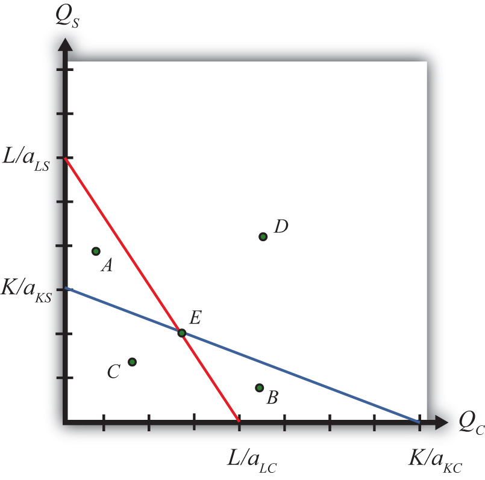
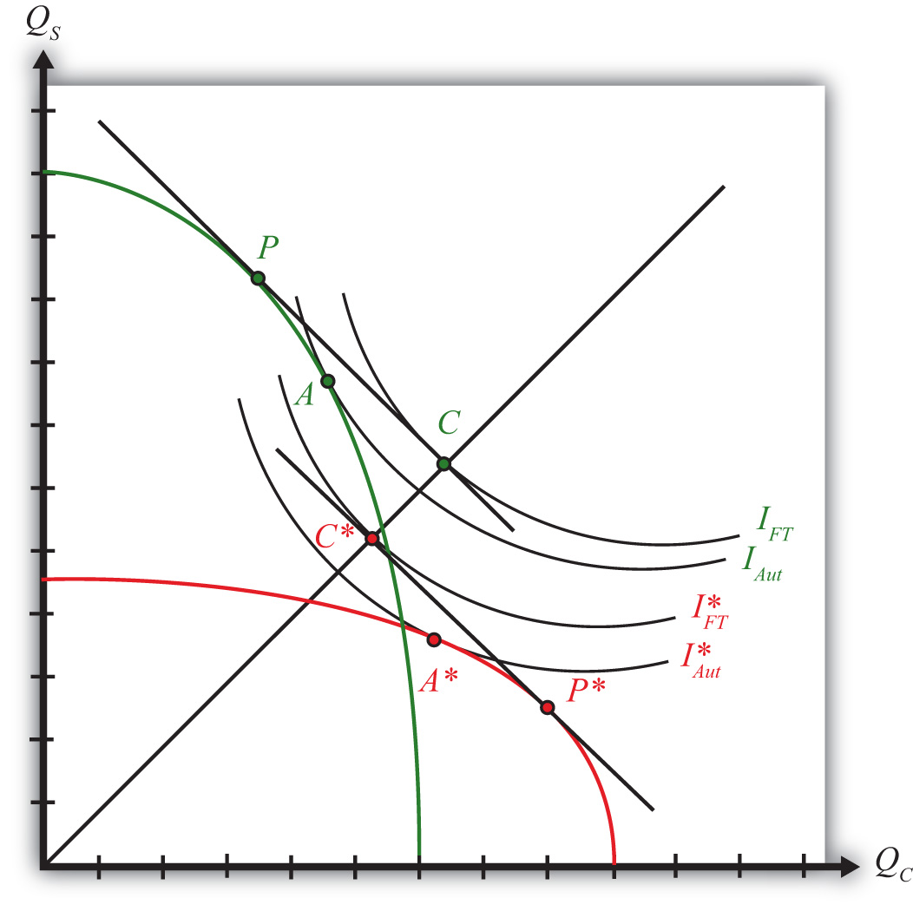

The Heckscher-Ohlin (H-O; aka the factor proportions) model is one of the most important models of international trade. It expands upon the Ricardian model largely by introducing a second factor of production. In its two-by-two-by-two variant, meaning two goods, two factors, and two countries, it represents one of the simplest general equilibrium models that allows for interactions across factor markets, goods markets, and national markets simultaneously.
These interactions across markets are one of the important economics lessons displayed in the results of this model. With the H-O model, we learn how changes in supply or demand in one market can feed their way through the factor markets and, with trade, the national markets and influence both goods and factor markets at home and abroad. In other words, all markets are everywhere interconnected.
Among the important results are that international trade can improve economic efficiency but that trade will also cause a redistribution of income between different factors of production. In other words, some will gain from trade, some will lose, but the net effects are still likely to be positive.
The end of the chapter discusses the specific factor model, which represents a cross between the H-O model and the immobile factor model. The implications for income distribution and trade are highlighted.
The factor proportions model was originally developed by two Swedish economists, Eli Heckscher and his student Bertil Ohlin, in the 1920s. Many elaborations of the model were provided by Paul Samuelson after the 1930s, and thus sometimes the model is referred to as the Heckscher-Ohlin-Samuelson (HOS) model. In the 1950s and 1960s, some noteworthy extensions to the model were made by Jaroslav Vanek, and so occasionally the model is called the Heckscher-Ohlin-Vanek model. Here we will simply call all versions of the model either the Heckscher-Ohlin (H-O) model, or simply the more generic “factor proportions model.”
The H-O model incorporates a number of realistic characteristics of production that are left out of the simple Ricardian model. Recall that in the simple Ricardian model only one factor of production, labor, is needed to produce goods and services. The productivity of labor is assumed to vary across countries, which implies a difference in technology between nations. It was the difference in technology that motivated advantageous international trade in the model.
The standard H-O model begins by expanding the number of factors of production from one to two. The model assumes that labor and capital are used in the production of two final goods. Here, capital refers to the physical machines and equipment that are used in production. Thus machine tools, conveyers, trucks, forklifts, computers, office buildings, office supplies, and much more are considered capital.
All productive capital must be owned by someone. In a capitalist economy, most of the physical capital is owned by individuals and businesses. In a socialist economy, productive capital would be owned by the government. In most economies today, the government owns some of the productive capital, but private citizens and businesses own most of the capital. Any person who owns common stock issued by a business has an ownership share in that company and is entitled to dividends or income based on the profitability of the company. As such, that person is a capitalist—that is, an owner of capital.
The H-O model assumes private ownership of capital. Use of capital in production will generate income for the owner. We will refer to that income as capital “rents.” Thus, whereas the worker earns “wages” for his or her efforts in production, the capital owner earns rents.
The assumption of two productive factors, capital and labor, allows for the introduction of another realistic feature in production: differing factor proportions both across and within industries. When one considers a range of industries in a country, it is easy to convince oneself that the proportion of capital to labor applied in production varies considerably. For example, steel production generally involves large amounts of expensive machines and equipment spread over perhaps hundreds of acres of land, but it also uses relatively few workers. (Note that relative here means relative to other industries.) In the tomato industry, in contrast, harvesting requires hundreds of migrant workers to hand-pick and collect each fruit from the vine. The amount of machinery used in this process is relatively small.
In the H-O model, we define the ratio of the quantity of capital to the quantity of labor used in a production process as the capital-labor ratioThe ratio of the quantity of capital to the quantity of labor used in a production process.. We imagine, and therefore assume, that different industries producing different goods have different capital-labor ratios. It is this ratio (or proportion) of one factor to another that gives the model its generic name: the factor proportions model.
In a model in which each country produces two goods, an assumption must be made as to which industry has the larger capital-labor ratio. Thus if the two goods that a country can produce are steel and clothing and if steel production uses more capital per unit of labor than is used in clothing production, we would say the steel production is capital intensiveAn industry is capital intensive relative to another industry if it has a higher capital-labor ratio in the production process. relative to clothing production. Also, if steel production is capital intensive, then it implies that clothing production must be labor intensiveAn industry is labor intensive relative to another industry if it has a higher labor-capital ratio in the production process. relative to steel.
Another realistic characteristic of the world is that countries have different quantities—that is, endowments—of capital and labor available for use in the production process. Thus some countries like the United States are well endowed with physical capital relative to their labor force. In contrast, many less-developed countries have much less physical capital but are well endowed with large labor forces. We use the ratio of the aggregate endowment of capital to the aggregate endowment of labor to define relative factor abundancy between countries. Thus if, for example, the United States has a larger ratio of aggregate capital per unit of labor than France’s ratio, we would say that the United States is capital abundant relative to France. By implication, France would have a larger ratio of aggregate labor per unit of capital and thus France would be labor abundant relative to the United States.
The H-O model assumes that the only differences between countries are these variations in the relative endowments of factors of production. It is ultimately shown that (1) trade will occur, (2) trade will be nationally advantageous, and (3) trade will have characterizable effects on prices, wages, and rents when the nations differ in their relative factor endowments and when different industries use factors in different proportions.
It is worth emphasizing here a fundamental distinction between the H-O model and the Ricardian model. Whereas the Ricardian model assumes that production technologies differ between countries, the H-O model assumes that production technologies are the same. The reason for the identical technology assumption in the H-O model is perhaps not so much because it is believed that technologies are really the same, although a case can be made for that. Instead, the assumption is useful in that it enables us to see precisely how differences in resource endowments are sufficient to cause trade and it shows what impacts will arise entirely due to these differences.
There are four main theorems in the H-O model: the Heckscher-Ohlin (H-O) theorem, the Stolper-Samuelson theorem, the Rybczynski theorem, and the factor-price equalization theorem. The Stolper-Samuelson and Rybczynski theorems describe relationships between variables in the model, while the H-O and factor-price equalization theorems present some of the key results of the model. The application of these theorems also allows us to derive some other important implications of the model. Let us begin with the H-O theorem.
The H-O theorem predicts the pattern of trade between countries based on the characteristics of the countries. The H-O theorem says that a capital-abundant country will export the capital-intensive good, while the labor-abundant country will export the labor-intensive good.
Here’s why. A country that is capital abundantA country is capital abundant relative to another country if it has a higher capital endowment per labor endowment than the other country. is one that is well endowed with capital relative to the other country. This gives the country a propensity for producing the good that uses relatively more capital in the production process—that is, the capital-intensive good. As a result, if these two countries were not trading initially—that is, they were in autarky—the price of the capital-intensive good in the capital-abundant country would be bid down (due to its extra supply) relative to the price of the good in the other country. Similarly, in the country that is labor abundantA country is labor abundant relative to another country if it has a higher labor endowment per capital endowment than the other country., the price of the labor-intensive good would be bid down relative to the price of that good in the capital-abundant country.
Once trade is allowed, profit-seeking firms will move their products to the markets that temporarily have the higher price. Thus the capital-abundant country will export the capital-intensive good since the price will be temporarily higher in the other country. Likewise, the labor-abundant country will export the labor-intensive good. Trade flows will rise until the prices of both goods are equalized in the two markets.
The H-O theorem demonstrates that differences in resource endowments as defined by national abundancies are one reason that international trade may occur.
The Stolper-Samuelson theoremA theorem that specifies how changes in output prices affect factor prices in the H-O model. It states that an increase in the price of a good will cause an increase in the price of the factor used intensively in that industry and a decrease in the price of the other factor. describes the relationship between changes in output prices (or prices of goods) and changes in factor prices such as wages and rents within the context of the H-O model. The theorem was originally developed to illuminate the issue of how tariffs would affect the incomes of workers and capitalists (i.e., the distribution of income) within a country. However, the theorem is just as useful when applied to trade liberalization.
The theorem states that if the price of the capital-intensive good rises (for whatever reason), then the price of capital—the factor used intensively in that industry—will rise, while the wage rate paid to labor will fall. Thus, if the price of steel were to rise and if steel were capital intensive, the rental rate on capital would rise, while the wage rate would fall. Similarly, if the price of the labor-intensive good were to rise, then the wage rate would rise, while the rental rate would fall.
The theorem was later generalized by Ronald Jones, who constructed a magnification effect for prices in the context of the H-O model. The magnification effect allows for analysis of any change in the prices of both goods and provides information about the magnitude of the effects on wages and rents. Most importantly, the magnification effect allows one to analyze the effects of price changes on real wages and real rents earned by workers and capital owners. This is instructive since real returns indicate the purchasing power of wages and rents after accounting for price changes and thus are a better measure of well-being than the wage rate or rental rate alone.
Since prices change in a country when trade liberalization occurs, the magnification effect can be applied to yield an interesting and important result. A movement to free trade will cause the real return of a country’s relatively abundant factor to rise, while the real return of the country’s relatively scarce factor will fall. Thus if the United States and France are two countries that move to free trade and if the United States is capital abundant (while France is labor abundant), then capital owners in the United States will experience an increase in the purchasing power of their rental income (i.e., they will gain), while workers will experience a decline in the purchasing power of their wage income (i.e., they will lose). Similarly, workers will gain in France, but capital owners will lose.
What’s more, the country’s abundant factor benefits regardless of the industry in which it is employed. Thus capital owners in the United States would benefit from trade even if their capital is used in the declining import-competing sector. Similarly, workers would lose in the United States even if they are employed in the expanding export sector.
The reasons for this result are somewhat complicated, but the gist can be given fairly easily. When a country moves to free trade, the price of its exported goods will rise, while the price of its imported goods will fall. The higher prices in the export industry will inspire profit-seeking firms to expand production. At the same time, the import-competing industry, suffering from falling prices, will want to reduce production to cut its losses. Thus capital and labor will be laid off in the import-competing sector but will be in demand in the expanding export sector. However, a problem arises in that the export sector is intensive in the country’s abundant factor—let’s say capital. This means that the export industry wants relatively more capital per worker than the ratio of factors that the import-competing industry is laying off. In the transition there will be an excess demand for capital, which will bid up its price, and an excess supply of labor, which will bid down its price. Hence, the capital owners in both industries experience an increase in their rents, while the workers in both industries experience a decline in their wages.
The factor-price equalization theorem says that when the prices of the output goods are equalized between countries, as when countries move to free trade, the prices of the factors (capital and labor) will also be equalized between countries. This implies that free trade will equalize the wages of workers and the rents earned on capital throughout the world.
The theorem derives from the assumptions of the model, the most critical of which are the assumptions that the two countries share the same production technology and that markets are perfectly competitive. In a perfectly competitive market, factors are paid on the basis of the value of their marginal productivity, which in turn depends on the output prices of the goods. Thus when prices differ between countries, so will their marginal productivities and hence so will their wages and rents. However, once goods’ prices are equalized, as they are in free trade, the value of marginal products is also equalized between countries and hence the countries must also share the same wage rates and rental rates.
Factor-price equalization formed the basis for some arguments often heard in the debates leading up to the approval of the North American Free Trade Agreement (NAFTA) between the United States, Canada, and Mexico. Opponents of NAFTA feared that free trade with Mexico would lower U.S. wages to the level in Mexico. Factor-price equalization is consistent with this fear, although a more likely outcome would be a reduction in U.S. wages coupled with an increase in Mexican wages.
Furthermore, we should note that factor-price equalization is unlikely to apply perfectly in the real world. The H-O model assumes that technology is the same between countries in order to focus on the effects of different factor endowments. If production technologies differ across countries, as we assumed in the Ricardian model, then factor prices would not equalize once goods’ prices equalize. As such, a better interpretation of the factor-price equalization theorem applied to real-world settings is that free trade should cause a tendency for factor prices to move together if some of the trade between countries is based on differences in factor endowments.
The Rybczynski theoremA theorem that specifies how changes in endowments affect production levels in the H-O model. It states that an increase in a country’s endowment of a factor will cause an increase in the output of the good that uses that factor intensively and a decrease in the output of the other good. demonstrates the relationship between changes in national factor endowments and changes in the outputs of the final goods within the context of the H-O model. Briefly stated, it says that an increase in a country’s endowment of a factor will cause an increase in output of the good that uses that factor intensively and a decrease in the output of the other good. In other words, if the United States experiences an increase in capital equipment, then that would cause an increase in output of the capital-intensive good (steel) and a decrease in the output of the labor-intensive good (clothing). The theorem is useful in addressing issues such as investment, population growth and hence labor force growth, immigration, and emigration, all within the context of the H-O model.
The theorem was also generalized by Ronald Jones, who constructed a magnification effect for quantities in the context of the H-O model. The magnification effect allows for analysis of any change in both endowments and provides information about the magnitude of the effects on the outputs of the two goods.
The H-O model demonstrates that when countries move to free trade, they will experience an increase in aggregate efficiency. The change in prices will cause a shift in production of both goods in both countries. Each country will produce more of its export good and less of its import good. Unlike the Ricardian model, however, neither country will necessarily specialize in production of its export good. Nevertheless, the production shifts will improve productive efficiency in each country. Also, due to the changes in prices, consumers, in the aggregate, will experience an improvement in consumption efficiency. In other words, national welfare will rise for both countries when they move to free trade.
However, this does not imply that everyone benefits. As the Stolper-Samuelson theorem shows, the model clearly demonstrates that some factor owners will experience an increase in their real incomes, while others will experience a decrease in their factor incomes. Trade will generate winners and losers. The increase in national welfare essentially means that the sum of the gains to the winners will exceed the sum of the losses to the losers. For this reason, economists often apply the compensation principle.
The compensation principle states that as long as the total benefits exceed the total losses in the movement to free trade, then it must be possible to redistribute income from the winners to the losers such that everyone has at least as much as they had before trade liberalization occurred.
Note that the “standard” H-O model refers to the case of two countries, two goods, and two factors of production. The H-O model has been extended to many countries, many goods, and many factors, but most of the exposition in this text, and by economists in general, is in reference to the standard case.
Jeopardy Questions. As in the popular television game show, you are given an answer to a question and you must respond with the question. For example, if the answer is “a tax on imports,” then the correct question is “What is a tariff?”
Perfect competition in all markets means that the following conditions are assumed to hold.
The case of two countries is used to simplify the model analysis. Let one country be the United States, the other France. Note that anything related exclusively to France in the model will be marked with an asterisk.
Two goods are produced by both countries. We assume a barter economy. This means that there is no money used to make transactions. Instead, for trade to occur, goods must be traded for other goods. Thus we need at least two goods in the model. Let the two produced goods be clothing and steel.
Two factors of production, labor and capital, are used to produce clothing and steel. Both labor and capital are homogeneous. Thus there is only one type of labor and one type of capital. The laborers and capital equipment in different industries are exactly the same. We also assume that labor and capital are freely mobile across industries within the country but immobile across countries. Free mobility makes the Heckscher-Ohlin (H-O) model a long-run model.
The total amount of labor and capital used in production is limited to the endowment of the country.
The labor constraintA relationship showing that the sum of the labor used in all industries cannot exceed total labor endowment in the economy. is
LC + LS = L,where LC and LS are the quantities of labor used in clothing and steel production, respectively. L represents the labor endowmentThe total amount of labor resources available to work in an economy during some period of time. of the country. Full employment of labor implies the expression would hold with equality.
The capital constraintA relationship showing that the sum of the capital used in all industries cannot exceed total capital endowment in the economy. is
KC + KS = K,where KC and KS are the quantities of capital used in clothing and steel production, respectively. K represents the capital endowmentThe total amount of capital resources available to work in an economy during some period of time. of the country. Full employment of capital implies the expression would hold with equality.
The only difference between countries assumed in the model is a difference in endowments of capital and labor.
A country is capital abundant relative to another country if it has more capital endowment per labor endowment than the other country. Thus in this model the United States is capital abundant relative to France if
where K is the capital endowment and L the labor endowment in the United States and K∗ is the capital endowment and L∗ the labor endowment in France.
Note that if the United States is capital abundant, then France is labor abundant since the above inequality can be rewritten to get
This means that France has more labor per unit of capital for use in production than the United States.
Factor owners are the consumers of the goods. The factor owners have a well-defined utility function in terms of the two goods. Consumers maximize utility to allocate income between the two goods.
In Chapter 5 "The Heckscher-Ohlin (Factor Proportions) Model", Section 5.9 "The Heckscher-Ohlin Theorem", we will assume that aggregate preferences can be represented by a homothetic utility function of the form U = CSCC, where CS is the amount of steel consumed and CC is the amount of clothing consumed.
The H-O model is a general equilibrium model. The income earned by the factors is used to purchase the two goods. The industries’ revenue in turn is used to pay for the factor services. The prices of outputs and factors in an equilibrium are those that equalize supply and demand in all markets simultaneously.
The production functions in Table 5.1 "Production of Clothing" and Table 5.2 "Production of Steel" represent industry production, not firm production. The industry consists of many small firms in light of the assumption of perfect competition.
Table 5.1 Production of Clothing
| United States | France |
|---|---|
| QC = f(LC, KC) | |
|
where QC = quantity of clothing produced in the United States, measured in racks LC = amount of labor applied to clothing production in the United States, measured in labor hours KC = amount of capital applied to clothing production in the United States, measured in capital hours f( ) = the clothing production function, which transforms labor and capital inputs into clothing output ∗All starred variables are defined in the same way but refer to the production process in France. |
|
Table 5.2 Production of Steel
| United States | France |
|---|---|
| QS = g(LS, KS) | |
|
where QS = quantity of steel produced in the United States, measured in tons LS = amount of labor applied to steel production in the United States, measured in labor hours KS = amount of capital applied to steel production in the United States, measured in capital hours g( ) = the steel production function, which transforms labor and capital inputs into steel output ∗All starred variables are defined in the same way but refer to the production process in France. |
|
Production functions are assumed to be identical across countries within an industry. Thus both the United States and France share the same production function f( ) for clothing and g( ) for steel. This means that the countries share the same technologies. Neither country has a technological advantage over the other. This is different from the Ricardian model, which assumed that technologies were different across countries.
A simple formulation of the production process is possible by defining the unit factor requirements.
Let
represent the unit labor requirement in clothing production. It is the number of labor hours needed to produce a rack of clothing.
Let
represent the unit capital requirement in clothing production. It is the number of capital hours needed to produce a rack of clothing.
Similarly,
is the unit labor requirement in steel production. It is the number of labor hours needed to produce a ton of steel.
And
is the unit capital requirement in steel production. It is the number of capital hours needed to produce a ton of steel.
By taking the ratios of the unit factor requirements in each industry, we can define a capital-labor (or labor-capital) ratio. These ratios, one for each industry, represent the proportions in which factors are used in the production process. They are also the basis for the model’s name.
First, is the capital-labor ratio in clothing production. It is the proportion in which capital and labor are used to produce clothing.
Similarly, is the capital-labor ratio in steel production. It is the proportion in which capital and labor are used to produce steel.
We say that steel production is capital intensive relative to clothing production if
This means steel production requires more capital per labor hour than is required in clothing production. Notice that if steel is capital intensive, clothing must be labor intensive.
Clothing production is labor intensive relative to steel production if
This means clothing production requires more labor per capital hour than steel production.
Factor intensity is a comparison of production processes across industries but within a country. Factor abundancy is a comparison of endowments across countries.
Two different assumptions can be applied in an H-O model: fixed and variable proportions. A fixed proportions assumption means that the capital-labor ratio in each production process is fixed. A variable proportions assumption means that the capital-labor ratio can adjust to changes in the wage rate for labor and the rental rate for capital.
Fixed proportions are more simplistic and also less realistic assumptions. However, many of the primary results of the H-O model can be demonstrated within the context of fixed proportions. Thus the fixed proportions assumption is useful in deriving the fundamental theorems of the H-O model. The variable proportions assumption is more realistic but makes solving the model significantly more difficult analytically. To derive the theorems of the H-O model under variable proportions often requires the use of calculus.
In fixed factor proportions, aKC, aLC, aKS, and aLS are exogenous to the model and are fixed. Since the capital-output and labor-output ratios are fixed, the capital-labor ratios, and , are also fixed. Thus clothing production must use capital to labor in a particular proportion regardless of the quantity of clothing produced. The ratio of capital to labor used in steel production is also fixed but is assumed to be different from the proportion used in clothing production.
Under variable proportions, the capital-labor ratio used in the production process is endogenous. The ratio will vary with changes in the factor prices. Thus if there were a large increase in wage rates paid to labor, producers would reduce their demand for labor and substitute relatively cheaper capital in the production process. This means aKC and aLC are variable rather than fixed. So as the wage and rental rates change, the capital output ratio and the labor output ratio are also going to change.
Jeopardy Questions. As in the popular television game show, you are given an answer to a question and you must respond with the question. For example, if the answer is “a tax on imports,” then the correct question is “What is a tariff?”
The production possibility frontier (PPF) can be derived in the case of fixed proportions by using the exogenous factor requirements to rewrite the labor and capital constraints. The labor constraint with full employment can be written as
aLCQC + aLSQS = L.The capital constraint with full employment becomes
aKCQC + aKSQS = K.Each of these constraints contains two endogenous variables: QC and QS. The remaining variables are exogenous.
We graph the two constraints in Figure 5.1 "The Labor and Capital Constraints". The red line is the labor constraint. The endpoints and represent the maximum quantities of clothing and steel that could be produced if all the labor endowments were allocated to clothing and steel production, respectively. All points on the line represent combinations of clothing and steel outputs that could employ all the labor available in the economy. Points outside the constraint, such as B and D, are not feasible production points since there are insufficient labor resources. All points on or within the line, such as A, C, and E, are feasible. The slope of the labor constraint is .
Figure 5.1 The Labor and Capital Constraints
The blue line is the capital constraint. The endpoints and represent the maximum quantities of clothing and steel that could be produced if all the capital endowments were allocated to clothing and steel production, respectively. Points on the line represent combinations of clothing and steel production that would employ all the capital in the economy. Points outside the constraint, such as A and D, are not feasible production points since there are insufficient capital resources. Points on or within the line, such as B, C, and E, are feasible. The slope of the capital constraint is .
The PPF is the set of output combinations that generates full employment of resources—in this case, both labor and capital. Only one point, point E, can simultaneously generate full employment of both labor and capital. Thus point E is the PPF. The production possibility set is the set of all feasible output combinations. The PPS is the area bounded by the axes and the interior section of the labor and capital constraints. Thus at points like A, there is sufficient labor to make production feasible but insufficient capital; thus point A is not a feasible production point. Similarly, at point B there is sufficient capital but not enough labor. Points like C, however, which lie inside (or on) both factor constraints, do represent feasible production points.
Note that the labor constraint is drawn with a steeper slope than the capital constraint. This implies , which in turn implies (with cross multiplication) . This means that steel is assumed to be capital intensive and clothing production is assumed to be labor intensive. If the slope of the capital constraint had been steeper, then the factor intensities would have been reversed.
Jeopardy Questions. As in the popular television game show, you are given an answer to a question and you must respond with the question. For example, if the answer is “a tax on imports,” then the correct question is “What is a tariff?”
The Rybczynski theorem demonstrates how changes in an endowment affect the outputs of the goods when full employment is maintained. The theorem is useful in analyzing the effects of capital investment, immigration, and emigration within the context of a Heckscher-Ohlin (H-O) model. Consider Figure 5.2 "Graphical Depiction of Rybczynski Theorem", depicting a labor constraint in red (the steeper lower line) and a capital constraint in blue (the flatter line). Suppose production occurs initially on the PPF at point A.
Figure 5.2 Graphical Depiction of Rybczynski Theorem

Next, suppose there is an increase in the labor endowment. This will cause an outward parallel shift in the labor constraint. The PPF and thus production will shift to point B. Production of clothing, the labor-intensive good, will rise from C1 to C2. Production of steel, the capital-intensive good, will fall from S1 to S2.
If the endowment of capital rose, the capital constraint would shift out, causing an increase in steel production and a decrease in clothing production. Recall that since the labor constraint is steeper than the capital constraint, steel is capital intensive and clothing is labor intensive.
This means that, in general, an increase in a country’s endowment of a factor will cause an increase in output of the good that uses that factor intensively and a decrease in the output of the other good.
Jeopardy Questions. As in the popular television game show, you are given an answer to a question and you must respond with the question. For example, if the answer is “a tax on imports,” then the correct question is “What is a tariff?”
The magnification effect for quantities is a more general version of the Rybczynski theorem. It allows for changes in both endowments simultaneously and allows a comparison of the magnitudes of the changes in endowments and outputs.
The simplest way to derive the magnification effect is with a numerical example.
Suppose the exogenous variables of the model take the values in Table 5.3 "Numerical Values for Exogenous Variables" for one country.
Table 5.3 Numerical Values for Exogenous Variables
| aLC = 2 | aLS = 3 | L = 120 |
| aKC = 1 | aKS = 4 | K = 120 |
|
where L = labor endowment of the country K = capital endowment of the country aLC = unit labor requirement in clothing production aKC = unit capital requirement in clothing production aLS = unit labor requirement in steel production aKS = unit capital requirement in steel production |
||
With these numbers, , which means that steel production is capital intensive and clothing is labor intensive.
The following are the labor and capital constraints:
We graph these in Figure 5.3 "Numerical Labor and Capital Constraints". The steeper red line is the labor constraint and the flatter blue line is the capital constraint. The output quantities on the PPF can be found by solving the two constraint equations simultaneously.
Figure 5.3 Numerical Labor and Capital Constraints

A simple method to solve these equations follows.
First, multiply the second equation by (−2) to get
2QC + 3QS = 120and
−2QC − 8QS = −240.Adding these two equations vertically yields
0QC − 5QS = −120,which implies . Plugging this into the first equation above (any equation will do) yields 2QC + 3∗24 = 120. Simplifying, we get . Thus the solutions to the two equations are QC = 24 and QS = 24.
Next, suppose the capital endowment, K, increases to 150. This changes the capital constraint but leaves the labor constraint unchanged. The labor and capital constraints now are the following:
Follow the same procedure to solve for the outputs in the new full employment equilibrium.
First, multiply the second equation by (−2) to get
2QC + 3QS = 120and
−2QC − 8QS = −300.Adding these two equations vertically yields
0QC − 5QS = −180,which implies . Plugging this into the first equation above (any equation will do) yields 2QC + 3∗36 = 120. Simplifying, we get . Thus the new solutions are QC = 6 and QS = 36.
The Rybczynski theorem says that if the capital endowment rises, it will cause an increase in output of the capital-intensive good (in this case, steel) and a decrease in output of the labor-intensive good (clothing). In this numerical example, QS rises from 24 to 36 and QC falls from 24 to 6.
The magnification effect for quantities ranks the percentage changes in endowments and the percentage changes in outputs. We’ll denote the percentage change by using a ^ above the variable (i.e., = percentage change in X).
Table 5.4 Calculating Percentage Changes in the Endowments and Outputs
| The capital stock rises by 25 percent. | |
| The quantity of steel rises by 50 percent. | |
| The quantity of clothing falls by 75 percent. | |
| The labor stock is unchanged. |
The rank order of the changes in Table 5.4 "Calculating Percentage Changes in the Endowments and Outputs" is the magnification effect for quantitiesA relationship in the H-O model that specifies the magnitude of output changes in response to changes in the factor endowments.:
The effect is initiated by changes in the endowments. If the endowments change by some percentage, ordered as above, then the quantity of the capital-intensive good (steel) will rise by a larger percentage than the capital stock change. The size of the effect is magnified relative to the cause.
The quantity of cloth (QC) changes by a smaller percentage than the smaller labor endowment change. Its effect is magnified downward.
Although this effect was derived only for the specific numerical values assumed in the example, it is possible to show, using more advanced methods, that the effect will arise for any endowment changes that are made. Thus if the labor endowment were to rise with no change in the capital endowment, the magnification effect would be
This implies that the quantity of the labor-intensive good (clothing) would rise by a greater percentage than the quantity of labor, while the quantity of steel would fall.
The magnification effect for quantities is a generalization of the Rybczynski theorem. The effect allows for changes in both endowments simultaneously and provides information about the magnitude of the effects. The Rybczynski theorem is one special case of the magnification effect that assumes one of the endowments is held fixed.
Although the magnification effect is shown here under the special assumption of fixed factor proportions and for a particular set of parameter values, the result is much more general. It is possible, using calculus, to show that the effect is valid under any set of parameter values and in a more general variable proportions model.
Consider a two-factor (capital and labor), two-good (beer and peanuts) H-O economy. Suppose beer is capital intensive. Let QB and QP represent the outputs of beer and peanuts, respectively.
Consider a country producing milk and cookies using labor and capital as inputs and described by a Heckscher-Ohlin model. The following table provides outputs for goods and factor endowments before and after a change in the endowments.
Table 5.5 Outputs and Endowments
| Initial | After Endowment Change | |
|---|---|---|
| Milk Output (QM) | 100 gallons | 110 gallons |
| Cookie Output (QC) | 100 pounds | 80 pounds |
| Labor Endowment (L) | 4,000 hours | 4,200 hours |
| Capital Endowment (K) | 1,000 hours | 1,000 hours |
Consider the following data in a Heckscher-Ohlin model with two goods (wine and cheese) and two factors (capital and labor).
aKC = 5 hours per pound (unit capital requirement in cheese)
aKW = 10 hours per gallon (unit capital requirement in wine)
aLC = 15 hours per pound (unit labor requirement in cheese)
aLW = 20 hours per gallon (unit labor requirement in wine)
L = 5,500 hours (labor endowment)
K = 2,500 hours (capital endowment)
The Stolper-Samuelson theorem demonstrates how changes in output prices affect the prices of the factors when positive production and zero economic profit are maintained in each industry. It is useful in analyzing the effects on factor income either when countries move from autarky to free trade or when tariffs or other government regulations are imposed within the context of a Heckscher-Ohlin (H-O) model.
Due to the assumption of perfect competition in all markets, if production occurs in an industry, then economic profit is driven to zero. The zero-profit conditions in each industry imply
PS = aLS w + aKS rand
PC = aLC w + aKC r,where PS and PC are the prices of steel and clothing, respectively; w is the wage paid to labor, and r is the rental rate on capital. Note that is the dollar payment to workers per ton of steel produced, while is the dollar payment to capital owners per ton of steel produced. The right-hand-side sum then is the dollars paid to all factors per ton of steel produced. If the payments to factors for each ton produced equal the price per ton, then profit must be zero in the industry. The same logic is used to justify the zero-profit condition in the clothing industry.
We imagine that firms treat prices exogenously since any one firm is too small to affect the price in its market. Because the factor output ratios are also fixed, wages and rentals remain as the two unknowns. In Figure 5.4 "Zero Profit Lines in Clothing and Steel", we plot the two zero-profit conditions in wage-rental space.
Figure 5.4 Zero Profit Lines in Clothing and Steel

The set of all wage and rental rates that will generate zero profit in the steel industry at the price PS is given by the flatter blue line. At wage and rental combinations above the line, as at points A and D, the per-unit cost of production would exceed the price, and profit would be negative. At wage-rental combinations below the line, as at points B and C, the per-unit cost of production would fall short of the price, and profit would be positive. Notice that the slope of the flatter blue line is .
Similarly, the set of all wage-rental rate combinations that will generate zero profit in the clothing industry at price PC is given by the steeper red line. All wage-rental combinations above the line, as at points B and D, generate negative profit, while wage-rental combinations below the line, as at A and C, generate positive profit. The slope of the steeper red line is .
The only wage-rental combination that can simultaneously support zero profit in both industries is found at the intersection of the two zero-profit lines—point E. This point represents the equilibrium wage and rental rates that would arise in an H-O model when the price of steel is PS and the price of clothing is PC.
Now, suppose there is an increase in the price of one of the goods. Say the price of steel, PS, rises. This could occur if a country moves from autarky to free trade or if a tariff is placed on imports of steel. The price increase will cause an outward parallel shift in the blue zero-profit line for steel, as shown in Figure 5.5 "Graphical Depiction of Stolper-Samuelson Theorem". The equilibrium point will shift from E to F, causing an increase in the equilibrium rental rate from r1 to r2 and a decrease in the equilibrium wage rate from w1 to w2. Only with a higher rental rate and a lower wage can zero profit be maintained in both industries at the new set of prices. Using the slopes of the zero-profit lines, we can show that , which means that clothing is labor intensive and steel is capital intensive. Thus, when the price of steel rises, the payment to the factor used intensively in steel production (capital) rises, while the payment to the other factor (labor) falls.
Figure 5.5 Graphical Depiction of Stolper-Samuelson Theorem

If the price of clothing had risen, the zero-profit line for clothing would have shifted right, causing an increase in the equilibrium wage rate and a decrease in the rental rate. Thus an increase in the price of clothing causes an increase in the payment to the factor used intensively in clothing production (labor) and a decrease in the payment to the other factor (capital).
This gives us the Stolper-Samuelson theorem: an increase in the price of a good will cause an increase in the price of the factor used intensively in that industry and a decrease in the price of the other factor.
State what is true about profit in the steel and clothing industry at the wage-rental combination given by the following points in Figure 5.4 "Zero Profit Lines in Clothing and Steel" in the text.
The magnification effect for prices is a more general version of the Stolper-Samuelson theorem. It allows for simultaneous changes in both output prices and compares the magnitudes of the changes in output and factor prices.
The simplest way to derive the magnification effect is with a numerical example.
Suppose the exogenous variables of the model take the values in Table 5.6 "Numerical Values for Exogenous Variables" for one country.
Table 5.6 Numerical Values for Exogenous Variables
| aLS = 3 | aKS = 4 | PS = 120 |
| aLC = 2 | aKC = 1 | PC = 40 |
|
where aLC = unit labor requirement in clothing production aLS = unit labor requirement in steel production aKC = unit capital requirement in clothing production aKS = unit capital requirement in steel production PS = the price of steel PC = the price of clothing |
||
With these numbers, , which means that steel production is capital intensive and clothing is labor intensive.
The following are the zero-profit conditions in the two industries:
The equilibrium wage and rental rates can be found by solving the two constraint equations simultaneously.
A simple method to solve these equations follows.
First, multiply the second equation by (−4) to get
3w + 4r = 120and
−8w − 4r = −160.Adding these two equations vertically yields
−5w − 0r = −40,which implies . Plugging this into the first equation above (any equation will do) yields 3∗8 + 4r = 120. Simplifying, we get . Thus the initial equilibrium wage and rental rates are w = 8 and r = 24.
Next, suppose the price of clothing, PC, rises from $40 to $60 per rack. This changes the zero-profit condition in clothing production but leaves the zero-profit condition in steel unchanged. The zero-profit conditions now are the following:
Follow the same procedure to solve for the equilibrium wage and rental rates.
First, multiply the second equation by (–4) to get
3w + 4r = 120and
−8w − 4r = −240.Adding these two equations vertically yields
−5w − 0r = −120,which implies . Plugging this into the first equation above (any equation will do) yields 3∗24 + 4r = 120. Simplifying, we get . Thus the new equilibrium wage and rental rates are w = 24 and r = 12.
The Stolper-Samuelson theorem says that if the price of clothing rises, it will cause an increase in the price paid to the factor used intensively in clothing production (in this case, the wage rate to labor) and a decrease in the price of the other factor (the rental rate on capital). In this numerical example, w rises from $8 to $24 per hour and r falls from $24 to $12 per hour.
The magnification effect for prices ranks the percentage changes in output prices and the percentage changes in factor prices. We’ll denote the percentage change by using a ^ above the variable (i.e., = percentage change in X).
Table 5.7 Calculating Percentage Changes in the Goods and Factor Prices
| The price of clothing rises by 50 percent. | |
| The wage rate rises by 200 percent. | |
| The rental rate falls by 50 percent. | |
| The price of steel is unchanged. | |
|
where w = the wage rate r = the rental rate |
|
The rank order of the changes in Table 5.7 "Calculating Percentage Changes in the Goods and Factor Prices" is the magnification effect for pricesA relationship in the H-O model that specifies the magnitude of factor price changes in response to changes in the output prices. It is used to identify the real wage and real rent effects of output price changes.:
The effect is initiated by changes in the output prices. These appear in the middle of the inequality. If output prices change by some percentage, ordered as above, then the wage rate paid to labor will rise by a larger percentage than the price of steel changes. The size of the effect is magnified relative to the cause.
The rental rate changes by a smaller percentage than the price of steel changes. Its effect is magnified downward.
Although this effect was derived only for the specific numerical values assumed in the example, it is possible to show, using more advanced methods, that the effect will arise for any output price changes that are made. Thus if the price of steel were to rise with no change in the price of clothing, the magnification effect would be
This implies that the rental rate would rise by a greater percentage than the price of steel, while the wage rate would fall.
The magnification effect for prices is a generalization of the Stolper-Samuelson theorem. The effect allows for changes in both output prices simultaneously and provides information about the magnitude of the effects. The Stolper-Samuelson theorem is a special case of the magnification effect in which one of the endowments is held fixed.
Although the magnification effect is shown here under the special assumption of fixed factor proportions and for a particular set of parameter values, the result is much more general. It is possible, using calculus, to show that the effect is valid under any set of parameter values and in a more general variable proportions model.
The magnification effect for prices can be used to determine the changes in real wages and real rents whenever prices change in the economy. These changes would occur as a country moves from autarky to free trade and when trade policies are implemented, removed, or modified.
Consider a country producing milk and cookies using labor and capital as inputs and described by a Heckscher-Ohlin model. The following table provides prices for goods and factors before and after a tariff is eliminated on imports of cookies.
Table 5.8 Goods and Factor Prices
| Initial ($) | After Tariff Elimination ($) | |
|---|---|---|
| Price of Milk (PM) | 5 | 6 |
| Price of Cookies (PC) | 10 | 8 |
| Wage (w) | 12 | 15 |
| Rental rate (r) | 20 | 15 |
Consider the following data in a Heckscher-Ohlin model with two goods (wine and cheese) and two factors (capital and labor).
aKC = 5 hours per pound (unit capital requirement in cheese)
aKW = 10 hours per gallon (unit capital requirement in wine)
aLC = 15 hours per pound (unit labor requirement in cheese)
aLW = 20 hours per gallon (unit labor requirement in wine)
PC = $80 (price of cheese)
PW = $110 (price of wine)
The production possibility frontier can be derived in the case of variable proportions by using the same labor and capital constraints used in the case of fixed proportions, but with one important adjustment. Under variable proportions, the unit factor requirements are functions of the wage-rental ratio (w/r). This implies that the capital-labor ratios (which are the ratios of the unit factor requirements) in each industry are also functions of the wage-rental ratio. If there is a change in the equilibrium (for some reason) such that the wage-rental rate rises, then labor will become relatively more expensive compared to capital. Firms would respond to this change by reducing their demand for labor and raising their demand for capital. In other words, firms will substitute capital for labor and the capital-labor ratio will rise in each industry. This adjustment will allow the firm to maintain minimum production costs and thus the highest profit possible. This is the first important distinction between variable and fixed proportions.
The second important distinction is that variable proportions change the shape of the economy’s PPF. The labor constraint with full employment can be written as
where aLC and aLW are functions of (w/r).
The capital constraint with full employment becomes
where aKC and aKW are functions of (w/r).
Under variable proportions, the production possibility frontier takes the traditional bowed-out shape, as shown in Figure 5.6 "The PPF in the Variable Proportions H-O Model". All points on the PPF will maintain full employment of both labor and capital resources. The slope of a line tangent to the PPF (such as the line through point A) represents the quantity of steel that must be given up to produce another unit of clothing. As such, the slope of the PPF is the opportunity cost of producing clothing. Since the slope becomes steeper as more and more clothing is produced (as when moving production from point A to B), we say that there is increasing opportunity cost. This means that more steel must be given up to produce one more unit of clothing at point B than at point A in the figure. In contrast, in the Ricardian model the PPF was a straight line that indicated constant opportunity costs.
Figure 5.6 The PPF in the Variable Proportions H-O Model

The third important distinction of variable proportions is that the magnification effects, derived previously under a fixed proportions assumption, continue to work under variable proportions. To show this requires a fair amount of advanced math, but a student can rest assured that we can apply the magnification effect even in the more complex variable proportions version of the Heckscher-Ohlin (H-O) model.
Jeopardy Questions. As in the popular television game show, you are given an answer to a question and you must respond with the question. For example, if the answer is “a tax on imports,” then the correct question is “What is a tariff?”
The Heckscher-Ohlin (H-O) theoremA theorem that predicts the pattern of trade in the H-O model. It states that the capital-abundant country will export the capital-intensive good and the labor-abundant country will export the labor-intensive good. states that a country that is capital abundant will export the capital-intensive good. Likewise, the country that is labor abundant will export the labor-intensive good. Each country exports that good that it produces relatively better than the other country. In this model, a country’s advantage in production arises solely from its relative factor abundancy.
The H-O model assumes that the two countries (United States and France) have identical technologies, meaning they have the same production functions available to produce steel and clothing. The model also assumes that the aggregate preferences are the same across countries. The only difference that exists between the two countries in the model is a difference in resource endowments. We assume that the United States has relatively more capital per worker in the aggregate than does France. This means that the United States is capital abundant compared to France. Similarly, France, by implication, has more workers per unit of capital in the aggregate and thus is labor abundant compared to the United States. We also assume that steel production is capital intensive and clothing production is labor intensive.
Figure 5.7 Endowment Differences and the PPF
The difference in resource endowments is sufficient to generate different PPFs in the two countries such that equilibrium price ratios would differ in autarky. To see why, imagine first that the two countries are identical in every respect. This means they would have the same PPF (depicted as the blue PPF0 in Figure 5.7 "Endowment Differences and the PPF"), the same set of aggregate indifference curves, and the same autarky equilibrium. Given the assumption about aggregate preferences—that is, U = CCCS—the indifference curve, I, will intersect the countries’ PPF at point A, where the absolute value of the slope of the tangent line (not drawn), PC/PS, is equal to the slope of the ray from the origin through point A. The slope is given by . In other words, the autarky price ratio in each country will be given by
Next, suppose that labor and capital are shifted between the two countries. Suppose labor is moved from the United States to France, while capital is moved from France to the United States. This will have two effects. First, the United States will now have more capital and less labor, and France will have more labor and less capital than it did initially. This implies that K/L> K∗/L∗, or that the United States is capital abundant and France is labor abundant. Second, the two countries’ PPFs will shift. To show how, we apply the Rybczynski theorem.
The United States experiences an increase in K and a decrease in L. Both changes will cause an increase in output of the good that uses capital intensively (i.e., steel) and a decrease in output of the other good (clothing). The Rybczynski theorem is derived assuming that output prices remain constant. Thus if prices did remain constant, production would shift from point A to B and the U.S. PPF would shift from the blue PPF0 to the green PPF in Figure 5.7 "Endowment Differences and the PPF".
Using the new PPF, we can deduce what the U.S. production point and price ratio would be in autarky given the increase in the capital stock and the decline in the labor stock. Consumption could not occur at point B because first, the slope of the PPF at B is the same as the slope at A because the Rybczynski theorem was used to identify it, and second, homothetic preferences imply that the indifference curve passing through B must have a steeper slope because it lies along a steeper ray from the origin.
Thus to find the autarky production point, we simply find the indifference curve that is tangent to the U.S. PPF. This occurs at point C on the new U.S. PPF along the original indifference curve, I. (Note that the PPF was conveniently shifted so that the same indifference curve could be used. Such an outcome is not necessary but does make the graph less cluttered.) The negative of the slope of the PPF at C is given by the ratio of quantities CS′/CC′. Since CS′/CC′ > CSA/CCA, it follows that the new U.S. price ratio will exceed the one prevailing before the capital and labor shift, that is, PC/PS > (PC/PS)0. In other words, the autarky price of clothing is higher in the United States after it experiences the inflow of capital and outflow of labor.
France experiences an increase in L and a decrease in K. These changes will cause an increase in output of the labor-intensive good (i.e., clothing) and a decrease in output of the capital-intensive good (steel). If the price were to remain constant, production would shift from point A to D in Figure 5.7 "Endowment Differences and the PPF", and the French PPF would shift from the blue PPF0 to the red PPF′.
Using the new PPF, we can deduce the French production point and price ratio in autarky given the increase in the capital stock and the decline in the labor stock. Consumption could not occur at point D since homothetic preferences imply that the indifference curve passing through D must have a flatter slope because it lies along a flatter ray from the origin. Thus to find the autarky production point, we simply find the indifference curve that is tangent to the French PPF. This occurs at point E on the red French PPF along the original indifference curve, I. (As before, the PPF was conveniently shifted so that the same indifference curve could be used.) The negative of the slope of the PPF at C is given by the ratio of quantities CS″/CC″. Since CS″/CC″ < CSA/CCA, it follows that the new French price ratio will be less than the one prevailing before the capital and labor shift—that is, PC∗/PS∗ < (PC/PS)0. This means that the autarky price of clothing is lower in France after it experiences the inflow of labor and outflow of capital.
All of the above implies that as one country becomes labor abundant and the other capital abundant, it causes a deviation in their autarky price ratios. The country with relatively more labor (France) is able to supply relatively more of the labor-intensive good (clothing), which in turn reduces the price of clothing in autarky relative to the price of steel. The United States, with relatively more capital, can now produce more of the capital-intensive good (steel), which lowers its price in autarky relative to clothing. These two effects together imply that
Any difference in autarky prices between the United States and France is sufficient to induce profit-seeking firms to trade. The higher price of clothing in the United States (in terms of steel) will induce firms in France to export clothing to the United States to take advantage of the higher price. The higher price of steel in France (in terms of clothing) will induce U.S. steel firms to export steel to France. Thus the United States, abundant in capital relative to France, exports steel, the capital-intensive good. France, abundant in labor relative to the United States, exports clothing, the labor-intensive good. This is the H-O theorem. Each country exports the good intensive in the country’s abundant factor.
Suppose two countries, Malaysia and Thailand, can be described by a variable proportions H-O model. Assume they each produce rice and palm oil using labor and capital as inputs. Suppose Malaysia is capital abundant with respect to Thailand and rice production is labor intensive. Suppose the two countries move from autarky to free trade with each other. In the table below, indicate the effect of free trade on the variables listed in the first column in both Malaysia and Thailand. You do not need to show your work. Use the following notation:
+ the variable increases
− the variable decreases
0 the variable does not change
A the variable change is ambiguous (i.e., it may rise, it may fall)
Table 5.9 Effects of Free Trade
| In Malaysia | In Thailand | |
|---|---|---|
| Price Ratio Ppo/Pr | ||
| Output of Palm Oil | ||
| Output of Rice | ||
| Exports of Palm Oil | ||
| Imports of Rice | ||
| Capital-Labor Ratio in Palm Oil Production | ||
| Capital-Labor Ratio in Rice Production |
In Figure 5.8 "Free Trade Equilibria in an H-O PPF Diagram", we depict free trade equilibria in a Heckscher-Ohlin (H-O) model. The United States is assumed to be capital abundant, which skews its PPFUS (in green) in the direction of steel production, the capital-intensive good. France is labor abundant, which skews its PPFFR (in red) in the direction of clothing production, the labor-intensive good. In free trade, each country faces the same price ratio.
Figure 5.8 Free Trade Equilibria in an H-O PPF Diagram
The United States produces at point P. The tangent line at P represents the national income line for the U.S. economy. The equation for the income line is PCQC + PSQS = NI, where NI is national income in dollar terms. The slope of the income line is the free trade price ratio (PC/PS)FT. Consumption in the United States occurs where the aggregate indifference curve IFT, representing preferences, is tangent to the national income line at C. To reach the consumption point, the United States exports EXS and imports IMC.
France produces at point P∗. The tangent line at P∗ represents the national income line for the French economy. The slope of the income line is also the free trade price ratio (PC/PS)FT. Consumption in France occurs where the aggregate indifference curve IFT∗, representing preferences, is tangent to the national income line at C∗. Note that since the United States and France are assumed to have the same aggregate homothetic preferences and since they face the same price ratio in free trade, consumption for both countries must lie along the same ray from the origin, 0C. For France to reach its consumption point, it exports EXC∗ and imports IMS∗. In order for this to be a free trade equilibrium in a two-country model, U.S. exports of steel must equal French imports of steel (EXS = IMS∗) and French exports of clothing must equal U.S. imports of clothing (EXC∗ = IMC). In other words, the U.S. trade triangle formed by EXS, IMC, and the U.S. national income line must be equivalent to France’s trade triangle formed by EXC∗, IMS∗, and the French national income line.
Jeopardy Questions. As in the popular television game show, you are given an answer to a question and you must respond with the question. For example, if the answer is “a tax on imports,” then the correct question is “What is a tariff?”
Figure 5.9 "National Welfare Effects of Free Trade in the H-O Model" compares autarky and free trade equilibria for the United States and France.
Figure 5.9 National Welfare Effects of Free Trade in the H-O Model
The U.S. autarky production and consumption points are determined where the aggregate indifference curve is tangent to the U.S. PPF. This occurs at point A. The United States realizes a level of aggregate utility that corresponds to the indifference curve IAut.
The U.S. production and consumption points in free trade are P and C, respectively. In free trade, the United States realizes a level of aggregate utility that corresponds to the indifference curve IFT. Since the free trade indifference curve IFT lies to the northeast of the autarky indifference curve IAut, national welfare rises as the United States moves to free trade.
France’s autarky production and consumption points are determined by finding the aggregate indifference curve that is tangent to the French PPF. This occurs at point A∗. France realizes a level of aggregate utility that corresponds to the indifference curve IAut∗.
French production and consumption points in free trade are P∗ and C∗, respectively. In free trade, France realizes a level of aggregate utility that corresponds to the indifference curve IFT∗. Since the free trade indifference curve IFT∗ lies to the northeast of the autarky indifference curve IAut∗, national welfare rises as France moves to free trade.
This means that free trade will raise aggregate welfare for both countries relative to autarky. Both countries are better off with free trade.
However, the use of aggregate indifference curves (or preferences) ignores the issue of income distribution. Although it is correct to conclude from this analysis that both countries benefit from free trade, it is not correct to conclude that all individuals in both countries also benefit from free trade. By calculating changes in real income in the Heckscher-Ohlin (H-O) model, it can be shown that some individuals will likely benefit from free trade, while others will suffer losses. An increase in aggregate welfare means only that the sum of the gains exceeds the sum of the losses.
Another important issue is also typically ignored when using aggregate or national indifference curves to represent a country’s preferences. For these curves to make sense, we must assume that income distribution remains the same when moving from one equilibrium to another. That it does not is shown in Chapter 5 "The Heckscher-Ohlin (Factor Proportions) Model", Section 5.12 "The Distributive Effects of Free Trade in the Heckscher-Ohlin Model". The one way to resolve the issue is to assume that compensation is provided after the redistribution occurs so as to recreate the same income distribution. Compensation is discussed in Chapter 5 "The Heckscher-Ohlin (Factor Proportions) Model", Section 5.13 "The Compensation Principle".
Jeopardy Questions. As in the popular television game show, you are given an answer to a question and you must respond with the question. For example, if the answer is “a tax on imports,” then the correct question is “What is a tariff?”
The term “distributive effects” refers to the distribution of income gains, losses, or both across individuals in the economy. In the Heckscher-Ohlin (H-O) model, there are only two distinct groups of individuals: those who earn their income from labor (workers) and those who earn their income from capital (capitalists). In actuality, many individuals may earn income from both sources. For example, a worker who has deposits in a pension plan that invests in mutual funds has current wage income, but changes in rental rates will affect his or her future capital income. This person’s income stream thus depends on both the return to labor and the return to capital.
For the moment, we shall consider the distributive effects on workers who depend solely on labor income and capitalists who depend solely on capital income. Later we shall consider what happens if individuals receive income from both sources.
To measure gains or losses to workers and capitalists, we must evaluate the effects of free trade on their real incomes. Increases in nominal income are not sufficient to know whether an individual is better off since the price of exportable goods will also rise when a country moves to free trade. By assessing the change in real income, we can determine how the purchasing power of workers and capitalists is affected by the move to free trade.
Suppose there are two countries, the United States and France, producing two goods, clothing and steel, using two factors, capital and labor, according to an H-O model. Suppose steel production is capital intensive and the United States is capital abundant. This implies that clothing production is labor intensive and France is labor abundant.
If these two countries move from autarky to free trade, then, according to the H-O theorem, the United States will export steel to France and France will export clothing to the United States. Also, the price of each country’s export good will rise relative to each country’s import good. Thus in the United States, PS/PC rises, while in France PC/PS rises.
Next, we apply the magnification effect for prices to each country’s price changes.
In the United States, —that is, if the ratio of prices rises, it must mean that the percentage change in PS is greater than the percentage change in PC. Then applying the magnification effect for prices implies
This in turn implies that
which means that the real rent in terms of both steel and clothing rises. And
which means that the real wage in terms of both steel and clothing falls.
Thus individuals in the United States who receive income solely from capital are able to purchase more of each good in free trade relative to autarky. Capitalists are made absolutely better off from free trade. Individuals who receive wage income only are able to purchase less of each good in free trade relative to autarky. Workers are made absolutely worse off from free trade.
In France, —that is, the percentage change in PC is greater than the percentage change in PS. Then, according to the magnification effect for prices,
This in turn implies that
which means that the real wage in terms of both clothing and steel rises. And
which means that the real rent in terms of both clothing and steel falls.
Thus individuals in France who receive wage income only are able to purchase more of each good in free trade relative to autarky. Workers are made absolutely better off from free trade. Individuals in France who receive income solely from capital are able to purchase less of each good in free trade relative to autarky. Capitalists are made absolutely worse off from free trade.
These results imply that both countries will experience a redistribution of income when moving from autarky to free trade. Some individuals will gain from trade, while others will lose. Distinguishing the winners and losers more generally can be done by referring to the fundamental basis for trade in the model. Trade occurs because of differences in endowments between countries. The United States is assumed to be capital abundant, and when free trade occurs, capitalists in the United States benefit. France is assumed to be labor abundant, and when free trade occurs, workers in France benefit. Thus, in the H-O model, a country’s relatively abundant factor gains from trade, while a country’s relatively scarce factor loses from trade.
It is worth noting that the redistribution of income is between factors of production and not between industries. The H-O model assumes that workers and capital are homogenous and are costlessly mobile between industries. This implies that all workers in the economy receive the same wage and all capital receives the same rent. Thus if workers benefit from trade in the H-O model, it means that all workers in both industries benefit. In contrast to the immobile factor model, one need not be affiliated with the export industry in order to benefit from trade. Similarly, if capital loses from trade, then capitalists suffer losses in both industries. One need not be affiliated with the import industry to suffer losses.
Consider an H-O economy in which there are two countries (United States and France), two goods (wine and cheese), and two factors (capital and labor).
Suppose two countries, Malaysia and Thailand, can be described by a variable proportions H-O model. Assume they each produce rice and palm oil using labor and capital as inputs. Suppose Malaysia is capital abundant with respect to Thailand and rice production is labor intensive. Suppose the two countries move from autarky to free trade with each other. In the table below, indicate the effect of free trade on the variables listed in the first column in both Malaysia and Thailand. You do not need to show your work. Use the following notation:
+ the variable increases
− the variable decreases
0 the variable does not change
A the variable change is ambiguous (i.e., it may rise, it may fall)
Table 5.10 Effects of Free Trade
| In Malaysia | In Thailand | |
|---|---|---|
| Price Ratio Ppo/Pr | ||
| Real Wage in Terms of Palm Oil | ||
| Real Wage in Terms of Rice | ||
| Real Rental Rate in Terms of Palm Oil | ||
| Real Rental Rate in Terms of Rice |
The Heckscher-Ohlin model generates several important conclusions for a country that moves from autarky to free trade:
A reasonable question at this juncture, then, is whether the gains to some individuals exceed the losses to others and, if so, whether it is possible to redistribute income to ensure that everyone is absolutely better off with trade than he or she was in autarky. In other words, is it possible for the winners from free trade to compensate the losers in such a way that everyone is left better off than he or she was in autarky?
The answer to this is yes in most circumstances. The primary reason is that the move to free trade improves production and consumption efficiency, which can make it possible for the country to consume more of both goods with trade compared to autarky.
Consider Figure 5.10 "Compensation in the H-O Model". Point A on the PPF represents the autarky production and consumption point for this economy. The shaded region represents the set of consumption points that provides at least as much of one good and more of the other relative to the autarky equilibrium. Suppose that in free trade production moves to P1 and consumption moves to C1. Since C1 lies within the shaded region, the country consumes more clothing and more steel in the aggregate than it had consumed in autarky. However, in moving from autarky to free trade, some factors have experienced increases in income, while others have suffered losses. This means that some individuals consume less of both goods in free trade, while others consume more of both goods.
Figure 5.10 Compensation in the H-O Model

However, since there are more of both goods in the aggregate, it is conceivable that government intervention, which takes some of the extra goods away from the winners, could sufficiently compensate the losers and leave everyone better off in trade.
The possibility of an effective redistribution depends in some circumstances on the way in which the redistribution is implemented. For example, taxes and subsidies could redistribute income from winners to losers but would simultaneously affect the domestic prices of the goods, which would affect consumption decisions and so on. With the secondary effects of taxes and subsidies, it becomes uncertain whether a redistribution policy would work. For this reason, economists will often talk about making a lump-sum redistribution or transfer. Lump-sum transfers are analogous to the transfers from rich to poor made by the infamous character Robin Hood. Essentially, goods must be stolen away from the winners, after they have made their consumption choices, and given to the losers, also after they have made their consumption choices. Furthermore, the winners and losers must not know or expect that a redistribution will be made, lest that knowledge affect their consumption choices beforehand. Thus a lump-sum redistribution is exactly what Robin Hood achieves. He steals from the wealthy, after they’ve purchased their goods, and gives to the poor, who were not expecting such a gift.
Although lump-sum compensations make perfect sense in theory, or in principle, it is worth noting how impractical they are. There is no government that has tried to institutionalize this process by creating a Division of Robin Hoodian Transfers. In practice, lump-sum transfers rarely occur.
Compensation may not always be as straightforward as in the previous example, however. Another possible outcome in a free trade equilibrium is for more of one good to be consumed but less of another relative to autarky. In other words, the free trade consumption point may occur at a point like C2 in Figure 5.11 "Compensation Difficulties". In this case, it would not be possible to compensate everyone with as much steel as they had in autarky since the economy is consuming less steel in the free trade equilibrium. However, even in this case it is potentially possible to arrange a redistribution scheme. The reason is that the economy could potentially choose a consumption point along the red line segment, as at point C1 Since the red segment lies in the range in which more of both goods is available, compensation to make everyone better off with trade remains a possibility.
Figure 5.11 Compensation Difficulties
Thus it is always possible to find a free trade consumption point and an appropriate lump-sum compensation scheme such that everyone is at least as well off with trade as they had been in autarky.
Jeopardy Questions. As in the popular television game show, you are given an answer to a question and you must respond with the question. For example, if the answer is “a tax on imports,” then the correct question is “What is a tariff?”
The fourth major theorem that arises out of the Heckscher-Ohlin (H-O) model is called the factor-price equalization theorem. Simply stated, the theorem says that when the prices of the output goods are equalized between countries as they move to free trade, then the prices of the factors (capital and labor) will also be equalized between countries. This implies that free trade will equalize the wages of workers and the rents earned on capital throughout the world.
The theorem derives from the assumptions of the model, the most critical of which is the assumption that the two countries share the same production technology and that markets are perfectly competitive.
In a perfectly competitive market, the return to a factor of production depends on the value of its marginal productivity. The marginal productivity of a factor, like labor, in turn depends on the amount of labor being used as well as the amount of capital. As the amount of labor rises in an industry, labor’s marginal productivity falls. As the amount of capital rises, labor’s marginal productivity rises. Finally, the value of productivity depends on the output price commanded by the good in the market.
In autarky, the two countries face different prices for the output goods. The difference in prices alone is sufficient to cause a deviation in wages and rents between countries because it affects the marginal productivity. However, in addition, in a variable proportions model the difference in wages and rents also affects the capital-labor ratios in each industry, which in turn affects the marginal products. All of this means that for various reasons the wage and rental rates will differ between countries in autarky.
Once free trade is allowed in outputs, output prices will become equal in the two countries. Since the two countries share the same marginal productivity relationships, it follows that only one set of wage and rental rates can satisfy these relationships for a given set of output prices. Thus free trade will equalize goods’ prices and wage and rental rates.
Since the two countries face the same wage and rental rates, they will also produce each good using the same capital-labor ratio. However, because the countries continue to have different quantities of factor endowments, they will produce different quantities of the two goods.
This result contrasts with the Ricardian model. In that model, production technologies are assumed to be different in the two countries. As a result, when countries move to free trade, real wages remain different from each other; the country with higher productivities will have higher real wages.
In the real world, it is difficult to know whether production technologies are different, similar, or identical. Supporting identical production technology, one could argue that state-of-the-art capital can be moved anywhere in the world. On the other hand, one might counter by saying that just because the equipment is the same doesn’t mean the workforces will operate the equipment similarly. There will likely always remain differences in organizational abilities, workforce habits, and motivations.
One way to apply these model results to the real world might be to say that to the extent that countries share identical production capabilities, there will be a tendency for factor prices to converge as freer trade is realized.
Jeopardy Questions. As in the popular television game show, you are given an answer to a question and you must respond with the question. For example, if the answer is “a tax on imports,” then the correct question is “What is a tariff?”
Suppose there are two countries, Japan and the Philippines, described by a variable proportions H-O model. Suppose they produce two goods, rice and chicken, using two factors, labor and capital. Let rice be capital intensive and the Philippines be labor abundant.
Suppose there are two countries, Japan and the Philippines, as described in Exercise 2 above. Suppose goods trade is restricted between the countries and that factor mobility between countries suddenly becomes free.
The specific factor (SF) model was originally discussed by Jacob Viner, and it is a variant of the Ricardian model. Hence the model is sometimes referred to as the Ricardo-Viner model. The model was later developed and formalized mathematically by Ronald Jones (1971)See R. W. Jones, “A Three-Factor Model in Theory, Trade and History,” in Trade, Balance of Payments and Growth, ed. J. N. Bhagwati, R. W. Jones, R. A. Mundell, and J. Vanek (Amsterdam: North-Holland Publishing Co., 1971). and Michael Mussa (1974)Michael Mussa, “Tariffs and the Distribution of Income: The Importance of Factor Specificity, Substitutability, and Intensity in the Short and Long-Run,” Journal of Political Economy, 82, no. 6 (1974): 1191–1203.. Jones referred to it as the two-good, three-factor model. Mussa developed a simple graphical depiction of the equilibrium that can be used to portray some of the model’s results. It is this view that is presented in most textbooks.
The model’s name refers to its distinguishing feature—that one factor of production is assumed to be “specific” to a particular industry. A specific factor is one that is stuck in an industry or is immobile between industries in response to changes in market conditions. A factor may be immobile between industries for a number of reasons. Some factors may be specifically designed (in the case of capital) or specifically trained (in the case of labor) for use in a particular production process. In these cases, it may be impossible, or at least difficult or costly, to move these factors across industries. See Chapter 4 "Factor Mobility and Income Redistribution", Section 4.2 "Domestic Factor Mobility" and Chapter 4 "Factor Mobility and Income Redistribution", Section 4.3 "Time and Factor Mobility" for more detailed reasons for factor immobility.
The SF model is designed to demonstrate the effects of trade in an economy in which one factor of production is specific to an industry. The most interesting results pertain to the changes in the distribution of income that would arise as a country moves to free trade.
The SF model assumes that an economy produces two goods using two factors of production, capital and labor, in a perfectly competitive market. One of the two factors of production, typically capital, is assumed to be specific to a particular industry—that is, it is completely immobile. The second factor, labor, is assumed to be freely and costlessly mobile between the two industries. Because capital is immobile, one could assume that capital in the two industries is different, or differentiated, and thus is not substitutable in production. Under this interpretation, it makes sense to imagine that there are really three factors of production: labor, specific capital in Industry 1, and specific capital in Industry 2.
These assumptions place the SF model squarely between an immobile factor model and the Heckscher-Ohlin (H-O) model. In an immobile factor model, all the factors of production are specific to an industry and cannot be moved. In an H-O model, both factors are assumed to be freely mobile—that is, neither factor is specific to an industry. Since the mobility of factors in response to any economic change is likely to increase over time, we can interpret the immobile factor model results as short-run effects, the SF model results as medium-run effects, and the H-O model results as long-run effects.
Production of Good 1 requires the input of labor and capital specific to Industry 1. Production of Good 2 requires labor and capital specific to Industry 2. There is a fixed endowment of sector-specific capital in each industry as well as a fixed endowment of labor. Full employment of labor is assumed, which implies that the sum of the labor used in each industry equals the labor endowment. Full employment of sector-specific capital is also assumed; however, in this case the sum of the capital used in all the firms within the industry must equal the endowment of sector-specific capital.
The model assumes that firms choose an output level to maximize profit, taking prices and wages as given. The equilibrium condition will have firms choosing an output level, and hence a labor usage level, such that the market-determined wage is equal to the value of the marginal product of the last unit of labor. The value of the marginal productThe increment in revenue that a firm will obtain by adding another unit of labor to its production process. is the increment of revenue that a firm will obtain by adding another unit of labor to its production process. It is found as the product of the price of the good in the market and the marginal product of labor. Production is assumed to display diminishing returns because the fixed stock of capital means that each additional worker has less capital to work with in production. This means that each additional unit of labor will add a smaller increment to output, and since the output price is fixed, the value of the marginal product declines as labor usage rises. When all firms behave in this way, the allocation of labor between the two industries is uniquely determined.
The production possibility frontier (PPF) will exhibit increasing opportunity costs. This is because expansion of one industry is possible by transferring labor out of the other industry, which must therefore contract. Due to the diminishing returns to labor, each additional unit of labor switched will have a smaller effect on the expanding industry and a larger effect on the contracting industry. This means that the graph of the PPF in the SF model will look similar to the PPF in the variable proportion H-O model. However, in relation to a model in which both factors were freely mobile, the SF model PPF will lie everywhere inside the H-O model PPF. This is because the lack of mobility of one factor inhibits firms from taking full advantage of efficiency improvements that would be possible if both factors can be freely reallocated.
The SF model is used to demonstrate the effects of economic changes on labor allocation, output levels, and factor returns. Many types of economic changes can be considered, including a movement to free trade, the implementation of a tariff or quota, growth of the labor or capital endowment, or technological changes. This section will focus on effects that result from a change in prices. In an international trade context, prices might change when a country liberalizes trade or when it puts into place additional barriers to trade.
When the model is placed into an international trade context, differences of some sort between countries are needed to induce trade. The standard approach is to assume that countries differ in the amounts of the specific factors used in each industry relative to the total amount of labor. This would be sufficient to cause the PPFs in the two countries to differ and could potentially generate trade. Under this assumption, the SF model is a simple variant of the H-O model. However, the results of the model are not sensitive to this assumption. Trade may arise due to differences in endowments, differences in technology, differences in demands, or some combination. The results derive as long as there is a price change, for whatever reason.
So suppose, in a two-good SF model, that the price of one good rises. If the price change is the result of trade liberalization, then the industry whose price rises is in the export sector. The price increase would set off the following series of adjustments. First, higher export prices would initially raise profits in the export sector since wages and rents may take time to adjust. The value of the marginal product in exports would rise above the current wage, and that would induce the firms to hire more workers and expand output. However, to induce the movement of labor, the export firms would have to raise the wage that they pay. Since all labor is alike (the model assumes labor is homogeneous), the import-competing sector would have to raise its wages in step so as not to lose all of its workers. The higher wages would induce the expansion of output in the export sector (the sector whose price rises) and a reduction in output in the import-competing sector. The adjustment would continue until the wage rises to a level that equalizes the value of the marginal product in both industries.
The return to capital in response to the price change would vary across industries. In the import-competing industry, lower revenues and higher wages would combine to reduce the return to capital in that sector. However, in the export sector, greater output and higher prices would combine to raise the return to capital in that sector.
The real effects of the price change on wages and rents are somewhat more difficult to explain but are decidedly more important. Remember that absolute increases in the wage, or the rental rate on capital, does not guarantee that the recipient of that income is better off, since the price of one of the goods is also rising. Thus the more relevant variables to consider are the real returns to capital (real rents) in each industry and the real return to labor (real wages).
Ronald Jones (1971) derived a magnification effect for prices in the SF model that demonstrated the effects on the real returns to capital and labor in response to changes in output prices. In the case of an increase in the price of an export good and a decrease in the price of an import good, as when a country moves to free trade, the magnification effect predicts the following impacts:
This result means that when a factor of production, like capital, is immobile between industries, a movement to free trade will cause a redistribution of income. Some individuals—owners of capital in the export industry—will benefit from free trade. Other individuals—owners of capital in the import-competing industries—will lose from free trade. Workers, who are freely mobile between industries, may gain or may lose since the real wage in terms of exports rises while the real wage in terms of imports falls. If workers’ preferences vary, then those individuals who have a relatively high demand for the export good will suffer a welfare loss, while those individuals who have a relatively strong demand for imports will experience a welfare gain.
Notice that the clear winners and losers in this model are distinguishable by industry. As in the immobile factor model, the factor specific to the export industry benefits, while the factor specific to the import-competing industry loses.
Jeopardy Questions. As in the popular television game show, you are given an answer to a question and you must respond with the question. For example, if the answer is “a tax on imports,” then the correct question is “What is a tariff?”
Consider an economy with two perfectly competitive industries, textiles and steel. Suppose the output of both products requires labor and capital as factor inputs. However, we’ll imagine the capital used in textile production consists of equipment such as looms, while the capital used in steel production requires equipment such as blast furnaces. Since each type of capital is designed for use in a specific production process, we call it “specific capital.” We can imagine that if the capital from one industry were shifted to another, its productivity in the new industry would be zero. Simply imagine the usefulness of a blast furnace in textile production and you should see the point! Thus for capital to remain fully employed, it must remain in the same industry—it is immobile, or stuck in its respective industry.
We assume labor, on the other hand, is homogenous and perfectly freely mobile between the two industries. This will imply that a firm’s choice problem is reduced to the decision of how much labor to hire and how much to produce to maximize its profits, given that it has a fixed amount of capital available to use. We’ll assume for simplicity that the capital stock in each industry is exogenously fixed and there is no investment in new capital.
In this context, a firm will maximize it profits when it produces a level of output such that the wage it must pay to workers is equal to the value of the marginal product at the chosen level of output. This is written in equation form for a textile firm as follows:
w = PT MPT.The left-hand side of the equation represents the hourly wage the firm pays its workers. The right-hand side is the value of the marginal product, which consists of the product of the market price of output (PT) and the marginal product of production (MPT). The marginal product, in turn, represents the additional output that can be obtained by increasing the labor input by one unit. For example, if MPT = 10, this means that by adding one more hour of labor, ten additional meters of cloth could be produced. The units of the expression MPT are meters of cloth per hour of labor (m/hr.). When multiplied by the price, measured as dollars per meter, the product, PT MPT, yields the number of dollars that could be earned per hour of additional labor applied in production. This then is the definition of the value of the marginal product in this context. It is measured in dollars per hour, the same as the wage is measured—a good thing since they must be equal to each other!
To see why this condition will hold when the firm maximizes profit, we will graph these expressions in Figure 5.12 "Specific Factor Model—Single-Firm Equilibrium", which depicts the value of a marginal product line for a representative textile firm, VMPT = PT MPT, and the market wage rate, wT, with respect to the labor supply.
The wage is assumed to be exogenous to each firm and is independent of the labor supply. Hence it is drawn as a horizontal line at the level of the wage, wT.Later the wage will be determined endogenously through the interaction of the two industries. Nevertheless, firms in both industries recognize they are too small to influence the market wage and make decisions based on an exogenously given wage.
Figure 5.12 Specific Factor Model—Single-Firm Equilibrium
The value of the marginal product is a decreasing function of labor. This means that at higher levels of labor usage, each additional unit of labor applied to production adds fewer units of output. The intuition for this is straightforward. Imagine more and more workers being assigned to use the same machine in a production process. Each additional worker may help in the production process and add output (thus MP > 0), but as more and more are added, overcrowding will set in and each person will find less and less to do that is helpful. Thus the marginal product will fall. Since we draw the value of the marginal product line under the assumption that there is a fixed amount of specific capital in the industry, the same overcrowding argument applies at the larger industry scale.
The position of the VMP line is dependent on the market price and the amount of specific capital, both assumed to be exogenous. If the price of the product rises (falls), the VMP line shifts upward (downward). The same applies for changes in the amount of specific capital. If the amount of specific capital in the industry were to rise (fall), the VMP line would shift upward (downward).
The profit-maximizing choice of labor input by the industry is determined at level LE on the horizontal axis, where the wage wT is equal to the value of the marginal product VMPT at point E. To see why, consider what it would mean if the industry chose a different labor input, say L1. At L1, VMPL1 > wT. This says that the additional revenue earned by expanding labor input by one unit exceeds the additional cost of adding one more unit of labor. Thus adding one more unit of labor must raise profit, which means that L1 cannot be the profit-maximizing choice—it must lie to the right of L1. Next consider labor input L2. At L2, VMPL2 < wT. This says that the additional revenue earned by expanding labor input by one unit is less than the cost of adding one more unit of labor. Thus adding one more unit of labor must lower profit, which means that L2 cannot be the profit-maximizing choice—it must lie to the left of L2. Finally, consider labor input LE. At LE, VMPLE = wT. This says that the additional revenue earned by expanding labor input by one unit equals the additional cost of adding one more unit of labor. Thus adding one more unit of labor has no effect on profit, which means that LE must be the profit-maximizing choice.
In Figure 5.13 "Specific Factor Model—Factor Payments", we consider ways to represent the factor payments made in an equilibrium. Consider a wage rate wT and an equilibrium labor input given by LE. The product of these two, wTLE, represents the total amount of money that must be paid to workers in the industry and is referred to as the wage bill. It is the charges incurred by the owners (i.e., the bill that must be paid) to hire the workers. It is represented by the green shaded area.
Figure 5.13 Specific Factor Model—Factor Payments

The total amount of revenue earned by the firm on the market is given by the total shaded area (green + purple). This corresponds to the area under the VMPT line between 0 and LE units of labor. Without the use of calculus, it is difficult to describe why this is so. Nonetheless, since the VMP gives the additional revenue earned for each additional unit of labor, one can imagine beginning back at L = 0 and increasing labor in small increments. The vertical distance to the VMP line would be added to the total revenue for every increment in labor. Adding each of these vertical lines together between L= 0 and L = LE yields total revenue earned by the firm and is given by the total shaded area.
Finally, since there are only two factors of production—labor and specific capital—it must follow that the total revenue equals the sum of the wage bill and the capital bill, where the capital bill represents the total amount of money paid to the capital owners. In equation form we could write
total revenue = wage bill + capital bill.Since the total revenue is given by the total shaded area and the wage bill is given by the lower shaded area, the capital bill must be given by the upper purple shaded area. Again, this area represents the total amount of money the firm must pay to the owners of capital used in production. It is not the rental rate, however. The rental rate is given by the rental bill divided by the total quantity of capital units used in production. In other words, the rental rate in textiles, rT, is given by
rT = rental bill/KT,where KT is the fixed amount of specific capital available for use in the industry.
Similarly, the wage rate in textiles, wT, is given by
wT = wage bill/LE.The economy consists of two industries, textiles and steel, each of which is choosing labor input so as to maximize profit. Thus when both industries operate and both maximize profit,
wT = VMPTfor textiles and
wS = VMPSfor steel, where wT and wS are the wage rates paid to workers in textiles and steel, respectively. With homogeneous and perfectly mobile labor, another condition must also hold, namely, the labor constraint:
LT + LS = L.In other words, the labor used in textile production (LT) plus the labor used in steel production (LS) must equal the total labor endowment available in the economy (L). Finally, because labor is homogeneous and perfectly mobile between industries, wages must be equalized in equilibrium between the two industries. Thus
wT = wS.All four conditions must be satisfied simultaneously in an equilibrium in this model. To represent this equilibrium and to provide a medium to analyze potential changes, we present a diagram developed by Mussa (1974). The diagram (shown in Figure 5.14 "Specific Factor Model—Mussa Diagram") is unique in that it presents all four conditions together on the same graph. The horizontal axis of the diagram plots the labor supply. The vertical axis plots the wage and the value of the marginal products.
Figure 5.14 Specific Factor Model—Mussa Diagram

The horizontal length of Figure 5.14 "Specific Factor Model—Mussa Diagram", OTOS, represents the labor endowment (L), the total amount of labor available for use in the economy. The VMPT line slopes down from the left as presented before. However, the VMPS line slopes down from the right. This is because the point OS corresponds to zero units of labor used in steel production and OTOS units of labor used in textiles. As we move to the left from OS, labor used in steel increases, while labor used in textiles decreases. Thus the VMPS line is flipped and drawn with respect to its origin at OS. Every point along the horizontal axis corresponds to an allocation of labor between the two industries satisfying the labor constraint condition. Thus at a point like A, OTA units of labor are used in textile production (LT) and OSA units of labor are used in steel production (LS). The sum of the two equals OTOS, which is the total labor endowment (L).
At point E in Figure 5.14 "Specific Factor Model—Mussa Diagram", the two VMP lines intersect so that VMPT = VMPS, determining the unique wage rate w = wT = wS using all the available labor, OTOS. Thus at point E all four equilibrium conditions listed are satisfied.
Prices will change whenever a country moves from autarky to free trade or when a country imposes a trade or domestic policy. At this stage, we will simply consider the effects of a price change within the context of the model without specifying why the change occurred. (In more technical terms, we say the price change is exogenous.) Later, we’ll introduce several situations to see how trade or trade policies will affect outcomes in the specific factor (SF) model.
Suppose we begin with a country producing textiles and steel in an initial equilibrium given by point E in Figure 5.15 "Effects of a Price Increase". The original value of the marginal product lines is given by VMPT1 and VMPS1, respectively. The initial labor allocation is OTA units to textiles and OSA units to steel. The initial wage rate in both industries is w1.
Figure 5.15 Effects of a Price Increase

Now suppose the price of steel increases exogenously. The immediate effect will be to raise the value of the marginal product of steel, shifting up VMPS1 to VMPS2. The new equilibrium is given at point F. At F, labor allocated to steel production will have risen to OSB, while labor used in textiles will have fallen to OTB. The equilibrium wage increases to w2.
The intuition for these changes follows from the underlying dynamic effects. At first, when the price of steel rises, the wage and rental rates remain fixed. This means steel revenue rises while costs remain the same, stimulating an increase in steel profits. Positive profit, in a perfectly competitive market, induces new entry of firms into steel production, expansion of current firms in the industry, or both. To expand, steel must induce workers to move over from textile production. This requires an increase in the wage since labor demand temporarily exceeds labor supply. To prevent all the labor from shifting to steel, the textile industry must raise the wage to its workers as well. As labor shifts from textiles to steel and as the wage rises, the costs of production in steel and textiles rise. In steel, this erodes the temporary profits it was making. Textiles respond to the higher costs by cutting production and releasing workers. Remember, there is no ability to expand capital inputs in steel since we assume steel’s capital stock is fixed exogenously in size, and due to specificity, capital cannot be moved in from the textile industry. In the end, industry profits are driven to zero in both industries once the wage rises sufficiently.
Our prime concern, however, is the effect of the price increase on the factor payments or returns. In other words, how are wages and rental rates on capital affected by the steel price increase? The answer for wages is already shown. We can see that wages rise for workers in both industries. However, we care about not just how the nominal (money) wage changes but, more importantly, how the real wage changes. In other words, we need to identify how the purchasing power of wages changes when the price of steel increases. We also want to know how the real rental rates change.
When the price of steel rises from PS1 to PS2, the value of the marginal product line shifts up proportionally to the increase in the price. This is because the price of steel enters the value of the marginal product formula multiplicatively—that is, VMPS = PSMPS. The percentage change in the steel price is derived in Figure 5.15 "Effects of a Price Increase" as
Here’s why. First, the distance DA is the value of the marginal product for labor usage OSA when the price of steel is PS2. The distance EA is the value of the marginal product for labor usage OSA when the price of steel is PS1. Thus
Note that MPS cancels out because it is evaluated at the same labor input given by point A.
Similarly, since FB is the equilibrium wage at steel price PS2 and CB is the wage at steel price PS1, the percentage change in the equilibrium wage is given by
From Figure 5.15 "Effects of a Price Increase", it is obvious that , which means that the percentage change in the price of steel exceeds the percentage change in the wage rate.
Since in the exercise the price of textiles remains constant, , we can expand the inequality to
Since , this implies that w/PS, the real wage in terms of steel purchases, decreases. In other words, workers in both industries will be able to buy less steel after the steel price increase than before. However, , which implies that w/PT, the real wage in terms of textile purchases, increases. This means all workers will be able to buy more textiles after the steel price increase than before. In terms of overall well-being, workers will lose in total if they tend to purchase more steel products and fewer textile products. However, if a person’s preferences are tilted toward more textiles than steel, then the person may be better off.
When the price of steel rises from PS1 to PS2, the rental bill in the steel industry rises from area KEI to area JFH in Figure 5.15 "Effects of a Price Increase". Since the amount of capital in steel remains fixed, this must mean that the rental rate on steel capital increases. However, simply by looking at the diagram, it is impossible to tell if that increase exceeds or falls short of the percentage change in the price of steel. We’ll discuss this issue further.
The rental bill in the textile industry falls from area w1EG to area w2FG in Figure 5.15 "Effects of a Price Increase". Since the amount of capital in steel remains fixed, this must mean that the rental rate on textile capital decreases. Furthermore, since the price of steel increases and the price of textiles stays the same, it must follow that rT/PS and rT/PT decrease. Therefore, the real rental rate on textile capital must fall with respect to purchases of both goods when the price of steel increases.
A definitive ordering of the percentage changes in all goods and factor prices in a two-good SF model was derived mathematically by Jones (1971).See R. W. Jones, “A Three-Factor Model in Theory, Trade and History,” in Trade, Balance of Payments and Growth, ed. J. N. Bhagwati, R. W. Jones, R. A. Mundell, and J. Vanek (Amsterdam: North-Holland Publishing Co., 1971). The magnification effect for the SF model is analogous to the magnification effect for prices demonstrated in the Heckscher-Ohlin (H-O) model. It defines an ordering of percentage changes in factor prices induced by changes in the goods’ prices. Thus suppose the price of steel rises by a greater percentage than the price of textiles such that . This may occur if two countries move together in trade or if a trade or domestic policy is changed. Jones showed that the magnification effect in this case would be
Since and , this implies rS/PS and rS/PT both increase. Thus the real returns to steel capital increase with respect to both goods.
Since and , rT/PS and rT/PT both decrease. Thus the real returns to textile capital decrease with respect to both goods. Finally, since , w/PS, the real wage in terms of steel purchases, decreases. Thus workers will be able to buy less steel than before. However, , which implies that w/PT, the real wage in terms of textile purchases, increases. This means all workers will be able to buy more textiles than before.
An alternative version of the magnification effect in this model can be written for the case when the price of textiles rises by a greater percentage than the price of steel such that . The magnification effect in this case becomes
This implies that the real returns to capital in the textile industry increase, and the real returns to capital in the steel industry decrease with respect to purchases of both goods. As before, though, the effect on wages is mixed. Real wages with respect to steel purchases increase, while real wages with respect to textile purchases fall.
Since this model is a variation of the H-O model, production technologies are assumed to be identical between countries and trade occurs due to differences in factor proportions. Since there are ostensibly three factors—labor, textile capital, and steel capital—a country will export those goods that use its relatively abundant factor most intensively. Generally, this model is analyzed by assuming a country conforms to the trade pattern described by the H-O model.
Thus if steel production is capital intensive and the country is capital abundant, then in autarky the price of steel will be relatively lower domestically than abroad, while the price of textiles will be relatively higher. Upon opening trade, the price of steel will begin to rise as steel is exported and the price of textiles will fall as textiles are imported. These price changes are all one needs to apply the magnification effect.
If we assume trade leads to , then . This implies that the return to capital in the export industry (steel) rises, while the return to capital in the import-competing industry (textiles) falls. The return to mobile labor rises with respect to imported goods but falls with respect to export goods.
In contrast, if a country experiences the opposite price change such that , then the country must be exporting textiles and importing steel. This implies . Thus the return to capital in the export industry (textiles) rises, while the return to capital in the import-competing industry (steel) falls. The return to mobile labor rises with respect to imported goods but falls with respect to export goods.
Now we can state more formally and generally that if capital is immobile between industries (or specific to an industry) and if labor is homogeneous and freely mobile between industries, then free trade will cause an increase in the real rents earned by capital in the export industry, a decrease in real rents earned by capital in the import-competing industry, an increase in real wages with respect to purchases of the import goods, and a decrease in real wages with respect to purchases of the export goods.
Jeopardy Questions. As in the popular television game show, you are given an answer to a question and you must respond with the question. For example, if the answer is “a tax on imports,” then the correct question is “What is a tariff?”
A number of trade models demonstrate that movements to free trade will cause a redistribution of income. The immobile factor model concludes that income will be redistributed from workers in the import-competing industry to workers in the export industry. The specific factor (SF) model concludes that owners of capital in the export sector will gain at the expense of capital owners in the import-competing sector and that the effects on workers in both industries are ambiguous. The Heckscher-Ohlin (H-O) model demonstrates that income will be redistributed from owners of a country’s scarce factor, who will lose, to owners of a country’s abundant factor, who will gain.
One of the key distinctions between these models is the degree of factor mobility. The immobile factor model represents one extreme, in which factors are stuck in one industry and cannot move between sectors. The H-O model represents another extreme, in which factors can move freely and costlessly between sectors. The SF model represents an intermediate special case in which one factor is completely immobile and the other is completely mobile.
As was discussed in detail in Chapter 4 "Factor Mobility and Income Redistribution", Section 4.2 "Domestic Factor Mobility", different factors of production will likely have different degrees of mobility. Some factors are easily adaptable to other industries. For example, accountants are needed in all businesses, and trucks can be used to transport tomatoes or software. Other factors are so specialized that they cannot be easily adapted for use in other industries. Machinery is often carefully designed for a particular production process and cannot be applied elsewhere.
However, the adaptability of any productive factor is likely to change over time, with mobility rising the longer the amount of time that elapses (see Chapter 4 "Factor Mobility and Income Redistribution", Section 4.3 "Time and Factor Mobility"). Thus, if a country were to suddenly liberalize trade, in the very short run—perhaps up to a few weeks—most of the productive factors would not adjust to the change in prices. This is the situation reflected in the immobile factor model. After a few months or more, the most adaptable factors of production would begin to move from the import-competing sectors to the export sectors, while the least adaptable factors would remain stuck in their respective industries. This situation is characterized by the SF model, in which one factor is freely mobile but the other is immobile. Finally, in the very long run—perhaps after several years or more—we might expect all factors to have adapted to the changed economic conditions, either by moving to another industry or by moving out of productive activity, as with retired workers and capital equipment. This situation is depicted in the H-O model.
Thus, by piecing together the results of these models, we can evaluate how income redistribution is likely to change dynamically over time in response to any shock to the system, such as a movement toward trade liberalization or free trade.
Consider a country that produces two goods, which we simply label the import good and the export good, respectively. Production of these two goods requires two factors of production, capital and labor. Assume that the country in question is capital abundant vis-à-vis its trading partner and that the export good is capital intensive relative to the import good. In general, we maintain all the assumptions of the H-O model, with one exception: we will assume that in the short run, capital and labor are completely immobile between industries; in the medium run, labor is freely mobile but capital remains immobile; and in the long run, both labor and capital are freely and costlessly mobile between industries.
We will consider the effects of trade liberalization, although any change that affects the relative prices of the goods can be expected to stimulate similar dynamic effects. Trade liberalization, which in the extreme would be a movement from autarky to free trade, would raise the price of the country’s export good and lower the price of its import good. The change in prices sets off the following effects.
The immobile factor model, beginning in Chapter 4 "Factor Mobility and Income Redistribution", Section 4.4 "Immobile Factor Model Overview and Assumptions", was based on a variation of the Ricardian model. As such, the model assumed only one factor of production and different production technologies across countries. The results from that model do carry over into this two-factor, identical technology context, however.
First, consider the transition to the change in output prices. When the price of the export good rises, firms in the export industry will begin to collect more revenue from sales of their product. Initially, firm profit will begin to rise since the wage rate and rental rate on capital remains fixed. The increase in profit will stimulate the desire to expand production, but production cannot expand by drawing factors from the other industry due to the immobility of factors. Instead, profit-seeking firms within the industry will begin to compete for the capital and labor already in the industry. (Immobility of factors across industries does not mean that factors cannot move between firms within the industry. Recall also that the assumption of perfect competition implies that there are many, many firms operating within an industry.)
Each export firm now has the incentive to lure workers and capital away from other export firms so that it can expand its own production and raise its share of the industry profit. However, the only way to entice factor mobility within the industry is to offer a higher wage and a higher rent. Some factors may now move to other firms, while others may simply negotiate a higher payment from their present employer to induce them to stay. This bidding war will raise both the wage rate and the rental rate to factors employed within the export industry. The bidding war will end once the total factor cost to each firm is equal to revenue and the profit is driven to zero.
In the import industry, firms now face a lower price and hence a lower revenue. Profits will become negative for all firms in the industry. The firms’ only options to cut their losses are to contract by laying off workers or to lower the payments to the workers and capital owners. We will assume, for simplicity, that full employment prevails. However, we could easily imagine the bargaining strategy of the firm managers with the workers: “Either we lower your wages or we eliminate your job.” Given that factors are assumed to be immobile across industries, there is no hope, at least in the short run, of finding another job. If you are laid off, you could find alternative employment in another firm, but it would only hire you at a lower wage. The assumption of full employment, then, really just means that the price system in the market responds to the excess supply of workers and capital in this industry by lowering factor prices until all the factors are fully employed. Therefore, wages and rents will fall in the import-competing industry until profit in the industry rises to zero and losses are eliminated.
Although it is more difficult to explain intuitively, the real returns to factors in the export industry will rise, while the real returns to factors in the import-competing industry will fall. This means that workers and capital owners in the export industry will have greater purchasing power after trade liberalization, while workers and capitalists in the import-competing industry will be able to buy less.
The final short-run effects are summarized in Figure 5.16 "Short-Run Factor Income Effects of Trade Liberalization". Both workers and capitalists affiliated with the export industry will benefit from trade liberalization, while workers and capitalists affiliated with the import-competing sector will lose from free trade. Note that income redistribution, at least initially, is based on industry affiliation. What determines who wins and who loses is the industry from which you receive your income.
Figure 5.16 Short-Run Factor Income Effects of Trade Liberalization
The SF model is based on a variation of the H-O model. It assumes that one factor, labor, is freely mobile between the two industries, while the second factor, capital, is completely immobile between industries. Although it is unlikely that one factor would move completely before another begins to adjust, the SF model nonetheless is an easily representable intermediate position between the short-run and long-run effects.
First, consider the transition to equilibrium in the SF model. After the final adjustment depicted in the immobile factor model, the wage rate paid to workers in the export industry is higher than the wage paid in the import-competing industry. In the next step of the transition, workers (assumed to be the more readily mobile factor) in the import-competing industry begin to seek ways to obtain a higher wage. This might require additional education or training, or it may require workers to move to another geographical area. In any case, the transition takes time. As workers begin to move across sectors, the supply of labor to the export industry will rise. Profit-seeking firms in that sector will realize that they can temporarily raise their profits by lowering their wage and hiring workers moving in from the other sector. Competition among export firms will eventually lower the wage of all workers in the export industry. Competition within the industry for the specific immobile capital will bid up the rental rate even further than in the short run.
At the same time, the workers fleeing the import-competing sector will reduce the supply of labor there. Import firms will bid among themselves for the remaining workers to maintain output and profit, which will raise the wage paid to workers in this sector. With declining output, the demand for capital will fall, causing an even further drop in the rental rate paid to capital owners.
When the final adjustment of labor across sectors is complete, the wage paid to workers in both industries will be equal. Capital remains in its original sector, but changing prices and outputs affect its sectoral demand. The rental rate paid to capital owners in the export industry will remain higher than that obtained before trade liberalization and will increase relative to the short run. The rental rate for capital owners in the import-competing sector will remain lower than that obtained before trade liberalization.
The magnification effect for prices in this model can be used to assess the real return to factors in the medium-run equilibrium relative to the returns prior to trade liberalization. It shows that the real return to capital owners in the export industry will rise with respect to purchases of both goods, while the real return to capital in the import industry will fall with respect to purchases of both goods. Thus, as shown in Figure 5.17 "Medium-Run Factor Income Effects of Trade Liberalization", capitalists in the export industry gain and capitalists in the import industry lose.
Figure 5.17 Medium-Run Factor Income Effects of Trade Liberalization
The effect on workers is, in general, ambiguous. The real wage of workers in terms of purchases of the import good rises, while the real wage in terms of the export good falls. For this reason, we place a question mark in Figure 5.17 "Medium-Run Factor Income Effects of Trade Liberalization" to note the ambiguity. Whether a worker benefits or loses depends, in part, on the worker’s preferences. If a worker has a high demand for the import good for which the real wage rises, then the worker may benefit. If, however, a worker has a relatively high demand for the export good, then the worker would lose.
The H-O model assumes that both factors, labor and capital, are freely mobile between the two industries. As such, this corresponds to a long-run outcome after factors fully adjust to the changes in prices.
After the final adjustment depicted in the SF model, the wage rate paid to workers is the same in both industries, but the rental rate on capital in the export industry is higher than the rental rate paid in the import-competing industry. In the next step of the transition, capital owners (assumed to adjust in the final stage) in the import-competing industry begin to seek ways to obtain higher rents. This might require adapting the capital equipment for use in the export sector or waiting for the capital to fully depreciate and then reinvesting in capital that is usable in the export sector. In any case, the transition takes time. As capital begins to move across sectors, the supply of capital in the export industry will rise. Profit-seeking firms in that sector will realize that they can temporarily raise their profits by lowering their rental and hiring capital moving in from the other sector. Capital owners already in the export sector will have to begin accepting a lower rental payment to avoid being laid off. After all, firm owners can argue that there is no need to keep paying the higher rental rates when there is now a flood of accessible capital streaming in from the import sector.
In the import-competing sector, the loss of capital to the export sector makes capital relatively scarcer in the import sector. This leads to competition among firms for the capital that remains and forces up the price of capital in the import industry. Capital will cease to move between the two industries when the price of capital is equal in both sectors.
As the capital adjusts between industries, outputs and wage rates also adjust. Because the expanding export industry is capital intensive, its demand of capital per worker is greater than the amount of capital per worker that the labor-intensive import industry is able to give up. This implies that the relative demand for capital is higher in the transition to the long-run equilibrium, which results in an increase in the equilibrium rental rate. However, the relative demand for workers in the transition is lower, and this causes a reduction in the equilibrium wage rate.See J. P. Neary, “Short-Run Capital Specificity and the Pure Theory of International Trade,” Economic Journal 88, no. 351 (1978): 488–510, for an excellent description of the transition between the medium-run effects in the SF model and the long-run effects in the H-O model.
The magnification effect for prices in the H-O model reveals the real returns to the factors relative to those obtained prior to trade liberalization. The effect shows that the equilibrium rental rate rises by a greater percentage than the percentage changes in the two goods’ prices, indicating an absolute increase in the real rental rate for all capital owners. The effect also shows that the percentage change in the wage rate is less than the changes in both output prices, indicating an absolute reduction in the purchasing power of all workers’ wages. Since capital is the country’s relatively abundant factor vis-à-vis the rest of the world and labor is its relatively scarce factor, the general conclusion is that a country’s abundant factor gains from trade liberalization, while a country’s scarce factor loses. This result is indicated in Figure 5.18 "Long-Run Factor Income Effects of Trade Liberalization". Note that capital owners are shown to gain regardless of whether their capital is used in the expanding export sector or the declining import sector. Similarly, all workers lose, even those working in the expanding export sector.
Figure 5.18 Long-Run Factor Income Effects of Trade Liberalization
Now let’s consider the dynamic impact of trade liberalization on factor returns. Figure 5.19 "Dynamic Export-Capital Income Effects of Trade Liberalization", Figure 5.20 "Dynamic Import-Capital Income Effects of Trade Liberalization", Figure 5.21 "Dynamic Export-Labor Income Effects of Trade Liberalization", and Figure 5.22 "Dynamic Import-Labor Income Effects of Trade Liberalization" depict the changes in real income that might arise over time as a result of trade liberalization. We look at the following four factors in turn: (1) capital owners initially in the export industry, (2) capital owners initially in the import industry, (3) workers originally in the export industry, and (4) workers originally in the import industry. On the horizontal axis in Figure 5.19 "Dynamic Export-Capital Income Effects of Trade Liberalization", we plot time, with the initial time labeled TL to indicate when trade liberalization occurs. The equilibria that arise in the short run, medium run, and long run are depicted by the vertical blue dotted lines. On the vertical axis, we plot the change in real income, with zero representing the initial preliberalization level. When the graph is above zero, it indicates an increase in real income; when the graph is below zero, it represents a decrease in real income.
Figure 5.19 Dynamic Export-Capital Income Effects of Trade Liberalization

First, consider the owners of capital in the export industry before trade liberalization occurs. The series of models suggests that they will gain in the short run, gain in the medium run, and gain in the long run. However, the transition stories suggest that initial short-run gains would be followed by an increase in these gains in the medium run, but owners would suffer a reduction in their gains in the long term. The dynamic path might look like the red line depicted in Figure 5.19 "Dynamic Export-Capital Income Effects of Trade Liberalization". Note that although the factor gains throughout the transition, the magnitude of its gains varies.
The models suggest that owners of capital initially in the import industry lose in the short run, will lose further in the medium run, but will ultimately gain in the long run. Its dynamic path might look like the red line in Figure 5.20 "Dynamic Import-Capital Income Effects of Trade Liberalization". Since this factor experiences both gains and losses, one way to evaluate whether these factor owners are indeed better off would be to calculate the present discounted value of this stream of costs and benefits. If the period of losses is sufficiently large or lasts long enough or if the discount rate is high and the person is myopic, the present value may be negative. Otherwise, the discounted value will be positive.
Figure 5.20 Dynamic Import-Capital Income Effects of Trade Liberalization
The models suggest that workers who initially work in the export industry will experience gains in real income in the short run, followed by ambiguous effects in the medium run, followed by losses in the long run. The dynamic path might look like the red line shown in Figure 5.21 "Dynamic Export-Labor Income Effects of Trade Liberalization". The path is drawn such that the medium-run effect is zero, but the path could be either positive or negative at that point. The present value of this stream of benefits and costs could be positive or negative. If the short-run benefits are sufficiently large or last long enough or if the discount rate is high, then the present value would be positive. Otherwise, the present value is negative.
Figure 5.21 Dynamic Export-Labor Income Effects of Trade Liberalization
Finally, the models suggest that workers initially in the import sector will lose in the short run, experience ambiguous effects in the medium run, and ultimately lose in the long run. Its dynamic time path may look like the red line in Figure 5.22 "Dynamic Import-Labor Income Effects of Trade Liberalization". We have set the medium-run effects to zero, but they conceivably could be positive or negative. The present value of this path is likely to be negative even if the factor experiences some medium-run gains.
Figure 5.22 Dynamic Import-Labor Income Effects of Trade Liberalization
In summary, the models suggest that the effects of trade liberalization on factor income are rather complex. Some factors will benefit in the short, medium, and long run. Some will lose in all periods. However, some factors will benefit in the short run and lose in the long run, while others will lose in the short run and gain in the long run. The determinants of these paths are whether income is from a relatively abundant factor or from a relatively scarce factor and which industry the factor is employed in before the liberalization occurs.
Jeopardy Questions. As in the popular television game show, you are given an answer to a question and you must respond with the question. For example, if the answer is “a tax on imports,” then the correct question is “What is a tariff?”